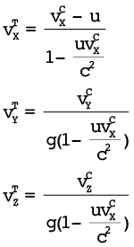

Orijinal frekansı f olup,
v hızıyla alıcıya yaklaşan bir ışık kaynağından algılanan frekans (ışık için Doppler formülü):
4. Bölüm - EINSTEIN ÖZEL GÖRELİLİĞİ
12- Esîr nedir?
- Newton yasalarından bahsettik. Ama bunlar mekaniği kapsıyorlar ve fizik, mekanikten ibaret değil. 3. Soru’da elektromanyetizmadan bahsetmiştiniz...
- 8. Sorunun sonuna doğru bahsettiğimiz gibi, Newton yasaları istatistikle birleşince, termodinamiği de açıklıyor. Elektromanyetizmanın temel yasaları ise 19. yüzyılda geliştirildi. Bunların, matematiksel şekli çok karışıktır, yazmayalım; ama kelimelerle anlatmaya çalışayım:
Birincisi olan elektrik Gauss yasası; duymuş olabileceğin Coulomb yasasına eşdeğerdir ve görsel olarak şu anlama gelir: Elektrik alan çizgileri ancak pozitif elektrik yüklerde başlayabilir ve negatif elektrik yüklerde bitebilir. Bir yükte başlayan ya da biten alan çizgisi sayısı, yükün büyüklüğüyle orantılıdır. Elektromanyetizmanın ikinci temel yasası ise, manyetik Gauss yasasıdır ve manyetik alan çizgilerinin başladığı veya bittiği yüklerin olmadığını söyler.
- Başlamıyor ve bitmiyorsa, nasıl var olabilirler ki?
- Bir çemberin başı-sonu var mı? Bu çizgiler kapalı eğriler olabilir ya da sonsuzdan gelip sonsuza uzanabilir... Aslında elektrik alan çizgileri de böyle olabilir; başlamak ve bitmek zorundadırlar demedik; ancak yüklerde başlayabilir veya bitebilirler dedik. Yasaların üçüncüsü, Ampére-Maxwell yasası, manyetik alanların, elektrik akımlar ya da değişken elektrik alanlar tarafından, çevrelerinde oluşturulduğu anlamına gelir.
- Ama manyetik alanlar mıknatıslarla da oluşturulabiliyor...
- Biliyorsun ki, atomların içinde, bir anlamda çekirdeğin etrafında dönen elektronlar vardır. Elektronlar yüklü olduğu için bu hareket, bir akıma eşdeğerdir. Ama elementlerin çoğunun atomlarında, bu akımların manyetik etkileri birbirini dengeler. Az sayıda elementin atomlarında ise, bu etkiler tam olarak dengelenmez ve net bir manyetik alan oluşur. Mıknatıslar, işte bu elementlerden yapılır.
Son olarak, Faraday yasası, elektrik alanların yalnızca elektrik yükler tarafından değil, değişken manyetik alanlar tarafından da çevrelerinde oluşturulabileceğini söyler. Bunların tamamına da Maxwell yasaları ya da denklemleri denir—
- İsimlerden anladığım kadarıyla bunların hepsini Maxwell bulmamış ama herhalde Newton yasalarında olduğu gibi bunları da tutarlı bir sistem haline getiren Maxwell olduğu için böyle adlandırılıyorlar, değil mi?
- Evet, aynen öyle. Ancak, 19. yüzyıl fizikçilerinin büyük bir sorunu vardı: 3. Soru’da biraz çıtlattığımız gibi, Newton yasalarının aksine, Maxwell denklemlerine 10. Soru’da gösterdiğimiz Galileo dönüşümünü uyguladığımızda, tekrar Maxwell denklemlerini elde etmeyiz. Yani elektromanyetizmanın temel yasaları, yalnızca bir koordinat sisteminde geçerli gibi görünüyordu!
- Aristoteles’in dönüşü...
- Ve esîrin—
- Esîr de ne?
- Eski Yunan’da, doğada boşluk olmayacağı, dolayısıyla her yeri, -bize tamamen boş görünen yerler dahil- dolduran bir maddenin var olması gerektiği düşünülüyor; adına da esîr deniyordu. Esîr zaten her yeri doldurduğu için hareket etmiyordu; yani bir anlamda durağan bir koordinat sistemi oluşturuyordu.
19. yüzyıl fizikçileri de doğada boşluk olmayacağını düşünüyorlardı, hatta bu düşünce “Doğa boşluktan nefret eder” diye ifade ediliyordu, dolayısıyla onlar da her yeri dolduran bir maddesel ortama kuramsal olarak ihtiyaç duyuyorlardı. Ayrıca, elektromanyetizmanın temel yasaları, elektromanyetik dalgaların var olması ve hızlarının ışık hızına eşit olması gerektiğini gösteriyordu—
- Hangi gözlemciye ya da koordinat sistemine göre?
- Yasalar yalnızca bir koordinat sisteminde geçerli gibi göründüğüne göre, o sistemde. Bu arada, ışık da yalnızca elektromanyetik dalgaların bir frekans bölgesine karşılık gelir: Hızların aynı çıkması tesadüf değildir. Bu dalgaların bir ortama ihtiyacı olduğu düşünüldü; aynen sesin bir ortam (örneğin hava) içinde yayılması ve hızının bu ortama göre tanımlanması gibi. Bu rol için esîr biçilmiş kaftandı: Güneş’ten ya da yıldızlardan dünyaya ışık geldiğine göre, bu ortam bize boş gelen yerlerde de varolmalıydı. Yani 19. yüzyıl fizikçilerine göre esîr, her yere nüfuz eden, onun sabit olduğu koordinat sisteminde elektromanyetizmanın temel yasalarının geçerli olduğu, dolayısıyla ışığın saniyede 300.000 km hızla gittiği bir ortamdı ve elektromanyetik dalgalar, bu ortamın titreşimlerinden oluşuyordu.
13-Işık ve diğer elektromanyetik dalgalar nasıl yayılır?
- Işık ile elektromanyetik dalgalar arasındaki ilişkiyi biraz açabilir misiniz?
- En kısa tanımıyla ışık, elektromanyetik dalgaların, insan gözünün algılayabildiği frekanslarına -ya da bir başka bakış açısıyla, dalga boylarına- denir.
- Elektromanyetik dendiğine göre, bu dalgalarda hem elektrik, hem manyetik alan “dalgalanıyor.” Nasıl? Yalnızca elektrik ya da yalnızca manyetik dalga var mı?
- “Dalgalanan” bir manyetik alan düşün. Bu alan, değişken olduğuna göre, çevresinde bir de elektrik alan yaratır; Faraday yasasını hatırla. Dolayısıyla yalnızca manyetik bir dalga olamaz. Peki bu elektrik alanın bir etkisi var mı? Eğer onu yaratan manyetik alanın zamana göre değişkenliği uygun bir şekildeyse, elektrik alan da değişken olur ve Ampére-Maxwell yasasına göre, çevresinde bir manyetik alan yaratır. İlk manyetik alanın çevresinin çevresinde bu manyetik alan oluştuğundan, sonuçta alan ilerlemiş olur ve bu böyle devam eder...
- Yani tavuk-yumurta-tavuk-yumurta-tavuk-... gibi...
- Evet de, senin örneğinde aslında horoz da var; onun burada bir karşılığı yok. Bu ayrıntıyı ihmal edersek, Faraday yasası, yani senin benzetmene göre tavukların yumurtladığı, daha önce bulunmuştu; ama yumurtadan tavuk çıktığı, yani Maxwell’in Ampére yasasına yaptığı ekleme, bu yasaların bulunan son parçasıydı ve gördüğün gibi, elektromanyetik dalgaların anlaşılabilmesi için şart. Ayrıca, az önce betimlediğimiz dalga davranışını matematiksel olarak analiz edince çıkan dalga denklemi, bize dalganın hızını elektromanyetizmanın temel sabitleri cinsinden verir ve rakam olarak hesaplandığında, ışığın hızıyla (c ile gösterilir) aynı çıkar. Bu çakışma, ışığın bir elektromanyetik dalga olduğu fikrine çok sağlam bir destek oluşturmuş ve bunun üzerine optik olayları Maxwell yasaları cinsinden açıklama çabası başlamış ve başarılı da olmuş, bunu Heinrich Hertz deneylerle de göstermiştir. Bu başarı ise, optiğin, temelde fiziğin ayrı bir dalı olmayıp, elektromanyetizmanın bir altdalı haline gelmesi; sonuçta evrenin daha az sayıda yasa ile anlaşılabilmesi demektir. Bu yüzden Maxwell’in katkısı, denklemlerin ufak bir parçası gibi görünmekle beraber, çok önemlidir; hem de denklemlerin ya da yasaların bütünlüğü ismi ile anılacak kadar...
- Işık, elektromanyetik dalgaların bir kısmıdır dediniz. Diğer kısımları nelerdir?
- En düşük frekanslı, yani en uzun dalga boylu olanlara, radyo dalgaları denir. Dalga boyu yaklaşık 1 m - 1 mm arasındakilere mikrodalga, onlarla görünür ışık arasındaki frekanslara ya da dalga boylarına da kızılötesi (bazen kızılaltı, enfraruj, infrared) denir. Görünür ışığın dalga boyu yaklaşık 400-700 nm21 arasıdır; üstündeki frekanslara da morötesi (bazen ultraviyole) denir. Sonra X, sonra da γ (gamma) ışınları gelir. (Bkz. Şekil 16)
21)m’nin (metre) önündeki n, nanonun kısaltmasıdır ve bu da milyarda bir demektir.

Şekil 16. Elektromanyetik dalgaların frekans ya da dalga boyuna göre sınıflandırılması.
- Bir de alfa ve beta ışınları yok muydu?
- Onlar dalga değil, parçacık akımıdır. Radyoaktivite çerçevesinde ilk keşfedildiklerinde bunların dalga-parçacık ayrımı yapılamamıştı, o yüzden alfa-beta-gamma diye isimlendirilmişlerdi. Beta parçacıkları elektrondur, alfa parçacıkları ise iki proton, iki nötrondan oluşur.
14-Işık hızı c, neden gözlemciye göre değişmez?
- Ama bir önceki soruda esîr kavramından bahsetmediniz...
- Evet, gözlemci ya da koordinat sisteminin esîre göre olan hızından ya da esîrin özelliklerinden bahsetmedim, zaten Maxwell denklemlerinin hiçbir yerinde de böyle bir şey geçmez; yalnızca boşluğa atfedilen iki sabit vardır.
Soru 12’de bahsettiğimiz gibi, elektromanyetik dalgalardan önce bilinen dalgalar, yani deniz dalgaları, ses dalgaları vb. varolabilmek için bir ortama ihtiyaç duyarlar; boşlukta ses duyulmaz, deniz dalgası kumsalda biter. Bu ortam, yalnızca dalganın varlığı için gerekli olmakla kalmaz, dalganın başta hızı olmak üzere, bazı özelliklerini de belirler. Örneğin, ses dalgalarının hızını hesaplamak için, uyduğu dalga denklemi çıkarılırken, havanın sıkıştırılabilirlik özellikleri, yoğunluğu vs. hesaba katılır.
Bu tecrübelerin ışığında oluşturulan esîr hipotezi biraz geliştirilip, elektromanyetik dalgaların özelliklerini açıklamak için mekanik modeller oluşturuldukça, garipleşmeye başladı: Örneğin, ışığın yüksek hızını açıklamak için esîrin yayılma yönünde son derece sert, buna dik yönde ise son derece yumuşak olması, aynı zamanda gezegenlerin hareketlerine hiç direnç göstermemesi gerekiyordu. Maxwell denklemlerinde de esîr hakkında bir ipucu olmadığına göre, Einstein, esîri varsaymanın ve ona çeşitli özellikler atfetmenin, kuramı gereksiz olarak karmaşıklaştırmak olduğu sonucuna vardı.
- Esîre çelişkili özellikler atfedilmesine rağmen, neden Einstein’dan öncekiler bu olasılığı irdelemediler?
- Çünkü esîrin varolmaması, Maxwell yasalarının her eylemsiz gözlemciye göre geçerli olması, dolayısıyla elektromanyetik dalgaların hızının her eylemsiz gözlemciye göre c olması anlamına geliyordu. Ancak, günlük deneyimlerimize ve içgüdülerimize ilk bakışta böylesine aykırı görünen bir önermeyi ne kabul edecek, ne de bu önermenin ve Maxwell denklemlerinin hem Galileo dönüşümleriyle tutarsız, hem de her eylemsiz gözlemciye göre geçerli olması çelişkisinin sonuçlarını gittikleri yere kadar takip edecek cesareti, Einstein’dan önce kimse gösteremedi. Belki de Einstein’ın bu cesareti; dehası ve kişiliğinden başka, kaybedecek bir akademik kadrosunun, kürsüsünün ya da itibarının olmamasından da kaynaklandı: Mezuniyetinden sonra üniversitelerde asistanlık bulamamış, patent bürosunda memur olarak çalışarak doktora yapıyordu.
- Yani ışık hızının tüm eylemsiz gözlemcilere göre aynı olması, elektromanyetizmanın temel yasalarının ek bir bileşen (esîr) gerektirmeden doğru olması ve görelilik ilkesi konularındaki ısrarın sonucu, öyle mi?
- Tamamen doğru. Alternatif olarak bu aynılık, Einstein (özel) göreliliği elektromanyetizmayı karıştırmadan anlamak/anlatmak istenildiğinde temel çıkış noktası (aksiyom ya da postulat) olarak da kullanılabiliyor; ancak bence görelilik ilkesi ve Maxwell denklemlerini temel çıkış noktası olarak kullanmak daha doyurucu. Biz de ışık hızının gözlemciye göre değişmezliğini zaman zaman kullanacağız.
15-Işık hızının değişmezliğiyle ilgili Michelson-Morley deneyi nedir?
- Peki ışık hızının tüm eylemsiz gözlemcilere göre aynı olmasının deneysel ya da gözlemsel desteği var mıdır?
- Bir ortam tarafından taşınan bir dalganın, ortam özelliklerince belirlenen hızı, bu ortama göre olan hızdır. Eğer gözlemci ortama, ya da ortam gözlemciye göre hareket ediyorsa, farklı bir hız gözlenir; aynen akıntıyla birlikte giden bir teknenin kıyıya göre hızının artması gibi. Bir dalga örneği vermek gerekirse, rüzgâr eserken bir gözlemcinin ölçeceği ses hızı, rüzgâra karşı yönde düşük, aksi yönde yüksek olur; sesten hızlı bir uçaktakiler, arkadan gelen bir sesi duyamaz.
Dolayısıyla eğer esîr varsa ve gözlemci esîre göre hareket halindeyse, ışığın hızı da benzer farklılıklar gösterecektir; bu farklılıkların gözlenmesi ya da olmadığının gösterilmesiyle esîrin varlığı ya da yokluğuna karar verilebilir—
- Ama esîrin -varsa tabii- örneğin gezegen hareketlerine hiçbir direnç göstermemesi gerektiğini söylemiştiniz. Bunu genelleştirirsek, esîrin madde ile mekanik etkileşime girmemesi gerektiğini çıkarabiliriz. Öyleyse hangi pervane ile esîr rüzgârı estireceğiz? Ya da gözlemci esîre göre olan hareketini nasıl tespit edecek?
- Doğru bir çıkarım. Bir sorun daha var: Herhangi bir etki varsa dahi, bu etkinin gözlemci/esîr bağıl hızı ışık hızına göre önemsizken, küçük olması beklenir; çok az rüzgârda ses hızının çok az değişeceği gibi. Oysa 19. yüzyılda ulaşılabilen hızlar, ışık hızına göre çok küçüktü; ışık hızı saniyede 300.000 km iken, trenler saatte 100 km, yani yaklaşık saniyede 30 m mertebesinde hızlara çıkabiliyordu; bir top güllesi bile, saniyede 1 km civarında bir hıza sahipti...
- Ölçüm düzeneğinin bir top güllesine nasıl yerleştirileceği ve ateşlemenin ivmesine nasıl dayanacağı da cabası...
- İşte bu yüzden, astronomik bir hızın kullanılmasına karar verildi: Dünya’nın Güneş etrafındaki 30 km/sn’lik dönüş hızı. Bu bile ışık hızının ancak 10.000’de biridir, ancak eldeki en yüksek hız buydu. Eğer Güneş esîr içinde durağansa, dünya 30 km/sn’lik bir esîr rüzgârının etkisinde olup, dünyanın gidiş yönünde ışık 10.000’de bir oranında hızlanıp, aksi yönde bu oranda yavaşlamalıydı—
- Ya Güneş esîr içinde durağan değilse?
- Önemli değil... Diyelim ki esîrin hızı, dünyanın 12 Ocak’taki hızına eşit olsun. O zaman, 12 Temmuz’da dünya, 60 km/s’lik bir esîr rüzgârına maruz kalır. Sonuç olarak, yıl boyu gözlem yapılırsa, Güneş Sistemi’nin esîre göre hareketinden bağımsız olarak, fark mutlaka algılanabilir.
Bu etkinin var olup olmadığını gözlemlemek için Amerikalı fizikçiler Michelson ve Morley, Michelson’ın geliştirdiği girişim ölçeri temel alan bir deney tasarladı. Bu deney, ışığın hızını değil, bu hızın değişik yönlerdeki farkını ölçebilecekti. Deney 1887’de yapıldı; sonuç sıfırdı. Yani ya esîr yoktu, ya da ışık üzerinde bir etkisi yoktu!
- Deney 1887, Einstein’ın çalışması 1905. Neden bu gecikme?
- Esîr öylesine benimsenmiş, öylesine “olmazsa olmaz” kabul ediliyordu ki, Michelson-Morley deneyinin olumsuz sonucunu açıklamak için İrlandalı FitzGerald ile Hollandalı ünlü matematiksel fizikçi Lorentz, hareketli cisimlere, gidiş yönlerinde esîrin baskı yaptığını ve cismin bu yöndeki boyutunun umdukları farkı yok etmeye yetecek oranda bir kısalmaya uğradığını ileri sürdüler.
- Hani esîr hareketli cisimlere direnç göstermiyordu?
- Değil mi? İşte esîrin çelişkili özelliklerine bir örnek... Einstein ise, Michelson-Morley deneyinden pek etkilenmişe benzemez (hatta ilgili makalesinde buna atıf bile yapmaz), ışık hızının gözlemciye göre değişmezliğine yukarıda bahsettiğimiz şekilde kendisi ulaşmıştır. Dönüşümün ve hareket yasalarının 3. Soru’da bahsettiğimiz gibi yeniden formüle edilmesinin en kısa yolu da, bu değişmezliğin kullanılmasıdır.
Tablo 2. Çeşitli hızlar için Lorentz faktörü γ’nın değerleri. Bu faktör 1’e ne kadar yakınsa, Einstein fiziği yerine Newton fiziği kullanmanın hatası o kadar az; 1’den ne kadar uzaksa da, hata o kadar fazladır. Işık hızının onda birinde hatanın yüzde bire yaklaştığını görebilirsiniz.
|
Yaklaşık neyin hızı olduğu |
Hız (u) değeri |
γ faktörü |
|
Durağan cisim |
0 |
1 |
|
Yürüyüş |
1 m/s |
1,000000000000000006 |
|
100 m koşucusu |
10 m/s |
1,0000000000000006 |
|
Formula 1 otomobili |
100 m/s |
1,00000000000006 |
|
Standart koşullarda ses |
340 m/s |
1,00000000000064 |
|
Tüfek mermisi |
1000 m/s |
1,000000000006 |
|
Dünya’dan kurtulma hızı |
11,2 km/s |
1,0000000007 |
|
Dünya’nın Güneş etrafındaki hızı |
30 km/s = 0,0001 c |
1,000000005 |
|
Güneş Sistemi’nin gökada etrafındaki hızı |
200 km/s = 0,0007 c |
1,00000022 |
|
0,001 c |
1,0000005 |
|
|
0,01 c |
1,00005 |
|
|
0,05 c |
1,0013 |
|
|
0,1 c |
1,0050 |
|
|
0,2 c |
1,02 |
|
|
0,3 c |
1,05 |
|
|
0,4 c |
1,09 |
|
|
0,5 c |
1,15 |
|
|
0,6 c |
1,25 |
|
|
0,7 c |
1,40 |
|
|
0,8 c |
1,67 |
|
|
0,9 c |
2,29 |
|
|
0,95 c |
3,2 |
|
|
0,98 c |
5,0 |
|
|
0,99 c |
7,1 |
|
|
0,999 c |
22 |
|
|
0,9999 c |
71 |
|
|
0,99999 c |
224 |
|
|
0,999999 c |
707 |
|
|
Tevatron hızlandırıcısında dolaşan bir proton |
0,99999988 c |
2050 |
|
CERN’in LHC hızlandırıcısında dolaşan bir proton |
0,99999999 c |
7100 |
|
En yüksek enerjili kozmik ışın protonları |
0,99999999999999 |
1.000.000.000.000 |
|
Işık ya da kütlesiz bir parçacık |
c |
∞ |
16-Zaman genleşmesi nedir? Hızlı giderek genç kalabilir miyim?
- Işık hızının değişmezliğini nasıl kullanıyoruz?
Şekil 17’de bir düşünce deneyi görüyorsun.
Şekil 17. Zaman genişlemesini gösteren düşünce deneyi.
- Düşünce deneyi ne demek?
- “Düşünce deneyi”, Einstein tarafından yaygınlaştırılan bir kavram; gerçekten yapılması gerekmeden, bir önermenin sonuçlarını akıl yürütmelerle bulmak için düşünülen, mümkün olduğu kadar detaylardan arındırılarak, sorunun özünü ortaya çıkarmak için tasarlanan mizansenlere deniyor.
Bu düşünce deneyinde, sonsuz bir düzlem ayna ve ona paralel, d mesafesinde sabit u hızıyla hareket eden bir araç var. Bu araç, aynaya çok kısa bir ışık sinyali gönderiyor ve yönünü de, yansıyan sinyali tekrar yakalayabileceği şekilde ayarlıyor. Görelilik bize bu olayı istediğimiz eylemsiz sistemde inceleyebileceğimizi söylüyor, öyleyse birden fazla sistemde inceleyelim. Önce, aynanın durağan olduğu sistemde (sol taraf) düşünelim. Bu sistemde sinyalin aynaya gidiş süresine t dersek, bu sürede araç da ut kadar yol kat edeceğinden, dik üçgen (Pisagor) bağıntısından buluruz. Aracın durağan olduğu sistemde -ki bu sistemde ayna u hızıyla sola hareket etmektedir- sinyalin aynaya gidiş süresine t’ dersek, ct’=d buluruz. Bundan da kolayca, şu bağıntı çıkarılabilir:
Zaman genleşmesi:
Burada sağda γ (gamma) dediğimiz faktörün tanımı gösterilmiştir, bu faktör her zaman 1’den büyüktür. Bu denklemin anlamı ise şudur: Sinyalin yollanması ile alınması arasında araçta ölçülen zaman, aynanın sabit olduğu sistemde ölçülen zamandan γ misli kısadır! Buna zaman genleşmesi denir. Bir başka deyişle, hareket eden bir sistemde, durağan sisteme göre zaman daha yavaş geçer.
- Böyle bir şey nasıl olabilir?
- Görelilik ilkesinin, bir başka deyişle ışığın hızının değişmezliğinin kaçınılmaz sonucu... Bunu teyit eden ilk gözlemlerden biri, kozmik ışın müonlarının yer seviyesinde gözlemlenebilmesidir. Kozmik ışınlar, uzaydan gelen yüksek enerjili parçacıklardır ve bunlar dünya atmosferinin atomlarıyla çarpıştıklarında, çeşitli parçacıklar oluşur, bunların bazıları da müon denen parçacıklardır. Ancak bu müonlar kararsızdır ve yaklaşık iki mikrosaniyelik (µs) bir yarı-ömür ile bozunurlar. Zaman genleşmesi olmasaydı, bu süre içinde ışık hızı ile bile gitseler, ancak 600 m kadar22 gidebilmeleri gerekirdi. Ama bu parçacıklar, 10.000 m civarında oluştukları halde, yer seviyesinde gözlemlenebilmektedir. Açıklama, zaman genleşmesi yüzünden müonlara göre iki mikrosaniye olan sürenin, büyükçe bir γ faktörüyle çarpılıp, bize göre en az 34-35 mikrosaniyeye çıkmasıdır.
22)2 µs × c = 2 ×10-6 s × 3 ×108 m/s = 600 m
- Yani ben şimdi hızla giden bir araca binsem, araçta zaman daha yavaş geçer, dolayısıyla ben daha yavaş mı yaşlanır, yani genç mi kalırım?
- Genç kalmaktan ne anladığına bağlı. Diyelim ki ışık hızına yakın bir hızda giden bir uzay gemisindesin, öyle ki geminin hızının γ faktörü 100 olsun. (Tablo 2’de çeşitli hızlar için γ değerlerini bulabilirsin). Gemide zaman dünyaya göre 100 misli yavaş geçer, yani sen 100 ışıkyılı mesafedeki bir yıldıza gidip gelsen, dünyada 200 yıldan biraz fazla zaman geçer, ama sen iki yıldan azıcık fazla yaşlanırsın. Ama bu 200 yıl yaşayıp da genç kalmak şeklinde olmaz, zaman sana göre gerçekten iki yıldır. Tabii döndüğünde dünyayı çok değişmiş bulursun, torunlarının torunlarıyla karşılaşabilirsin. Çok büyük ve beklenmedik değişimler olması olasılığını anlatan bilimkurgu eserleri vardır, Maymunlar Gezegeni başta olmak üzere. Hatırladığım bir başka öyküde de dünyaya döndüğünde tüm tanıdıkları yıllarca önce ölmüş bir uzay pilotu, babası yeni sefere çıkmış bir çocuğu evlat ediniyordu.
- Yani ben genç kalmam, dünyadakiler yaşlanır...
- Bir bakıma öyle... Bu γ faktörünün ne tarafa çalışacağını daha içselleştirebilmek için, özzaman23 kavramını tanımlayalım. Bu, kabaca uzay gemisinde ölçülen zamandır. Daha dikkatli tanım şudur: İki olay arasındaki özzaman aralığı, bu iki olayın aynı noktada cereyan ettiği (aynı uzay koordinatlarına sahip olduğu) sistemde ölçülen zaman aralığıdır. Örneğin, bu olaylar, astronotun gemi sabahında yataktan kalkması ile gemi gecesinde tekrar yatması olsun. Geminin koordinat sisteminde, bu iki olay aynı noktada, astronotun yatağının koordinatlarında olmuştur, dolayısıyla ölçülen zaman aralığı özzaman aralığıdır. Halbuki bizim koordinat sisteminde ilk olay Dünya yörüngesinde, ikinci olay Neptün dolaylarında olmuş olabilir; bu yüzden bizim ölçtüğümüz zaman aralığı özzaman aralığı değildir.
23)İngilizce: Proper time, Almanca: Eigenzeit. Türkçede bazen has zaman da deniyor.
- Bu tanımın bize faydası ne?
- Özzaman aralığı en kısa olandır. Sonucumuz bununla tutarlı değilse, hata yapmış olduğumuzu kolayca anlarız. Ya da bizim sistemimizdeki zaman aralığından gemideki zaman aralığını hesaplamak istiyorsak, bu özzaman aralığı olacağından, bizimkinden küçük olacaktır; dolayısıyla γ ile çarpmayıp, böleceğimizi biliriz.
Bu γ faktörüne, ileride bahsedeceğimiz sebeplerden dolayı Lorentz faktörü de denir ve yine ileride anlayacağımız üzere, klasik mekanik (Newton yasaları ve/veya Galileo dönüşümleri) kullanırsak yapacağımız hata oranını kabaca verir. 4. Soru’da bahsettiğimiz, ışık hızının yüzde 5’i ile giden cisimler için hatamızın binde bir mertebesinde olduğu ve günlük hayatımızdaki hızlarda hatanın ihmal edilebilir olduğu, dolayısıyla Newton yasalarını kullanmanın pratikte bir sakıncası olmadığı yargılarına bu tabloyu (ya da γ’nın formülünü) kullanarak varabilirsin...
17-Hareket göreli olduğuna göre giden mi genç kalır, kalan mı? (İkizler çelişkisi/paradoksu)
- Ama bir dakika... Madem görelilik var, ben uzay gemime binmiş hızla uzaklaşırken, kendimi durağan, dünyayı hızla benden uzaklaşıyor kabul edebilirim, hatta bu bakış açısı da en az dünyayı durağan kabul etmek kadar doğrudur, değil mi?
- Evet, doğrudur ...
- Ama ben durağansam ve dünya hareket ediyorsa, dünyadakiler benden yüz misli yavaş yaşlanacaklar demektir. Hani ben genç kalacaktım? Kim haklı? İkimiz birden haklı olamayız, değil mi? Kim genç kalacak?
- Bir kere genç kalmak diye bir şey yok, senin zamanının kısa olması var. İkincisi, bu dediğine ikizler çelişkisi/paradoksu denir. Kısa cevap, biraz Nasrettin Hoca’nın fıkrasına benzeyecek ama, ikiniz de haklısınız.
Ama ben önce burada çelişki/paradoks ifadesinin kullanımını biraz açayım. Aslında özel görelilikte çelişki/paradoks yoktur. Ama konuştuğumuz zaman genleşmesi, konuşacağımız uzunluk büzülmesi gibi kavramlar günlük hayat deneyimlerimize çok ters gibi geldiğinden, insanlar bunları çeşitli şekillerde birleştirerek bize çelişki gibi gelen düşünce deneyleri oluşturmuşlardır. Ancak dikkatli incelenince bunlarda çelişki olmadığı, bir yerde özel göreliliğin bir bileşeninin ihmal edilmiş ya da atlanmış olduğu görülür.
Her neyse, ben ikizler “çelişkisi/paradoksu”nun standart ifade edilişini anlatayım... İkiz kardeşlerden biri uzay gemisi ile gider, diğeri dünyada kalır. Kim daha gençtir? Bu konu konuşulurken, kardeşlere çeşitli isimler konur, bazen A ve B, bazen Amy ve Bill vs. Ama ben hep hangisinin adı neydi diye karıştırdığımdan, -cinsel ayırımcılık yapıyor gibi görünme pahasına- betimleyici isimler kullanacağım: Kalanın adı Durmuş, gidenin adı Tayyar24 olsun. Zaman genleşmesi yüzünden Durmuş’a göre Tayyar daha genç, Tayyar’a göre Durmuş daha genç.
24)Arapça kaynaklı bir isim; anlamı “uçan”.

Şekil 18. İkizler çelişkisi/paradoksu. Kim daha genç? Çizim: Barış Mengütay
- Bunda bir çelişki yok mu?
- Bunun nasıl olabildiğini değişik seviyelerde ve şekillerde anlamak mümkün, bu konuya Lorentz dönüşümlerini ve özel görelilikte andaşlığı konuşurken tekrar döneceğiz. Ama şimdilik, ikisinin böyle düşünmelerinin, bir araya gelip, kendilerini karşılaştırmadıkça (Tayyar gittikçe uzaklaşıyor) sorun olmayacağını söyleyeyim.
- Ya Tayyar yön değiştirip aynı hızla geri döner ve dünyaya inerse? O zaman kardeşiyle kucaklaştığında kim daha genç olacak? Hâlâ ikisi de diğerinin genç olduğunu iddia edemez, değil mi?
- Bu da çelişkinin/paradoksun ikinci kısmı. Evet, bu durumda kesin bir yargı oluşması gerekir: Yaşları eşit mi, biri daha genç mi? Cevap: Tayyar daha genç olur. Çünkü Tayyar’ın dönüşü simetriyi bozmuştur; artık Durmuş ve Tayyar gözlemci olarak eşit haklara sahip değillerdir: Başka bir eylemsiz gözlemciye göre Durmuş tüm süreç boyunca sabit hızla gitmiştir, dolayısıyla koordinat sistemi eylemsizdir; Tayyar ise hız değiştirmiştir. Eğer bu değiştirme yavaş yavaş (yani matematisel olarak sürekli bir biçimde) olduysa, Tayyar’ın koordinat sistemi eylemsiz değildir. Eğer sabit hızla gidip aniden dönüş yapıp yine sabit hızla geri geldiyse, bir eylemsiz koordinat sisteminden bir diğerine atlamıştır. Farklı koordinat sistemlerinde yapılan ölçümler her zaman birleştirilemez. Örneğin, iki nokta arasındaki mesafeyi hesaplamak için bu noktaların koordinatlarını ölçmeye çalıştığımızı, ancak iki noktanın ölçümlerinin arasında koordinat sistemimizi 60° döndürdüğümüzü düşün. Bu koordinatların sayısal değerlerinden sağlıklı bir mesafe hesaplanabilir mi?
18-Uzunluk büzülmesi nedir? Enine büzülme var mıdır?
- Demek zaman farklı algılanıyor, daha doğrusu ölçülüyor. Bu kadar mı?
- Hayır. Hızın da bağıl olduğunu hatırla: Madem esîr ya da benzeri bir mutlak durağan koordinat sistemi yok, ancak bir cismin diğerine göre hareketinden bahsedebiliriz. Yani ben sana göre u hızıyla gidiyorsam, sen de bana göre u hızıyla gidiyorsundur; ama ters yönde. Şimdi γ faktörü 100 olan uzay gemisini hatırla ve gökadamızın merkezine doğru gittiğini düşün. Gemiye göre de gökadamız, aksi istikamette u hızıyla gitmektedir. Geminin kalkışı ile varışı arasındaki süreyi, gemidekiler bize göre 100 misli kısa ölçerler. Ancak, hız aynı olduğuna göre, bu sürede gökadanın gittiği mesafeyi de 100 misli kısa ölçmeleri gerekir. Kalkışta Güneş Sistemi, varışta da gökadanın belli bir yıldızı olduğuna göre, gökadamızı da geminin gidişi yönünde 100 misli büzülmüş olarak ölçerler:
Uzunluk büzülmesi:
Yani hareketli bir cismin, örneğin bir uzay gemisinin uzunluğunu biz γ misli daha küçük ölçeriz. Buna FitzGerald-Lorentz büzülmesi (genellikle kısaca Lorentz büzülmesi) de denir, çünkü Soru 15’te konuştuğumuz gibi bu bilimciler esîr rüzgârının baskısıyla böyle bir büzülme olabileceğinden bahsetmişlerdi. Andaşlık bağlamında buna tekrar değineceğiz.
- Gidiş yönünde büzülme var da dik yönde niye yok? Bir diğer deyişle, Şekil 17’de sağdaki ve soldaki d’ler neden eşit?
- Taylor ve Wheeler’in kitabında bunun nefis bir açıklaması var: Bir çift ray üzerinde giden ve γ faktörünün etkin olduğu hızlara çıkabilen bir tren düşün:
Şimdi diyelim ki enine büzülme olsun. O zaman, yer (ray) sisteminde ray aralığı sabit kalıp, tren hareket ederken aksı büzüleceğinden, tekerlekler rayların içine düşerek tren raydan çıkar. Halbuki olaya tren sisteminden bakarsak -ki görelilik ilkesine göre bu da aynı derecede geçerli bir bakış açısıdır- aks uzunluğu sabit kalıp, ray aralığı büzülmelidir. Bu da tekerlekler rayların dışına düşerek trenin raydan çıkması demektir ve ikizler “paradoksu”nun aksine, gerçek bir çelişkidir; tren hem içeri, hem dışarı düşemez.
- Tabii çok benzer bir akıl yürütme ile enine büzülme yerine genleşme de olamaz. Öte yandan, boyuna büzülme ise treni raydan çıkarmaz...
19-Özel görelilikte andaşlık nasıldır?
- Zaman genleşmesi, uzunluk büzülmesi... Başka şaşırtıcı ne var?
- Andaşlık konusu var. Yani iki olayın aynı anda olup olmadığı sorusu... Galileo/Newton fiziğinde iki olayın zamanlarının karşılaştırılması mutlaktır; ya birinci olay önce olmuştur, ya ikinci olay, ya da ikisi andaştır (eşzamanlı); bitti! Bir kere oluş sırası bulunduktan sonra, artık sorgulanmaz.
Özel görelilikte ise andaşlığın ne olduğunu biraz daha dikkatli düşünmek gerekiyor... En mantıklı yol, ışık sinyalleri aracılığıyla tanımlamak: Uzaysal olarak, iki olayın cereyan ettiği noktaların ortasında bulunan bir gözlemciye, iki olaydan yollanan ışık sinyalleri eşzamanlı olarak ulaşırsa, olaylar andaştır.
Şimdi yine bizim çoban ile makinisti düşünelim; trenin iki ucunda birer flaş olsun ve makinist trenin tam ortasında otursun. (Başka bir deyişle, kullandığı koordinat sisteminin orijini orada olsun.) Çobana göre, tam onun makinistle yan yana geldiği anda trenin iki ucundaki flaşlar çaksın. (Şekil 20) Çoban, bu iki sinyali az sonra, ama eşzamanlı olarak alacağından, flaş çakma olaylarının (F1 ve F2) andaş olduğuna karar verebilecek, trenin uzunluğunu da bildiğinden, F1 ve F2’nin zamanını hesaplayabilecektir.
Şekil 20. Andaşlık görelidir.
Öte yandan makinist, F2’den gelen sinyali F1’den gelen sinyalden önce alacak, sinyallerin trenin iki ucundan, yani eşit mesafeden geldiğini bildiği için, F2’nin zamanının F1’in zamanından önce olduğuna karar verecektir! Zaman farkının trenin hızı ve uzunluğu ne kadar büyükse o kadar fazla olacağını görebilirsin...
Şekil 22. Taylor & Wheeler’in Spacetime Physics kitabından alınma çizimde, özel görelilikte ideal gözlemci görülüyor. Uzayı dolduran bir eşzamanlı saatler şebekesi, ana gözlemciye (referans saat) kendi yakın çevrelerindeki olayları raporlar. Ana saat, ağının merkezinde bekleyen bir örümcek gibi, bütün bu bilgileri toplar ve tüm olayların konum ve zamanlarını belirler: Olayın zamanı zaten bildirilmiştir, konumunu da hangi saat tarafından bildirildiği belirlemiş olur.
- Ama ne bir tren, bu etkilerin ölçülebileceği hızlara çıkabilir, ne de bizim çoban ile makinistte bu flaşların andaş olup olmadığını belirleyecek hassaslık olabilir...
- Biraz idare et, bu bir düşünce deneyi. Gerçek dünyada ise örneğin tren yerine Güneş Sistemi (hatta bir yıldız kümesi) olup, gökadanın içinde hareket ediyor olabilir, çoban yerine gökadanın diğer yıldızları geçer, F2 ve F1’in de neler olacağı konusunda da sen hayal gücünü kullan! Sonuç olarak:
Bir gözlemciye göre andaş olan iki olay,
bir diğerine göre andaş olmayabilir.
17. Soru’da konuştuğumuz ikizler “paradoksu”nda kardeşlerin, Tayyar uzaklaşırken birbirlerini daha genç olarak gözlemlemelerinin çelişki olmamasının anahtarı budur. Çünkü kimin daha genç olduğuna karar vermek için, iki kardeşi aynı anda karşılaştırmak gerekir; Durmuş’un aynı anda dediği olayları Tayyar aynı anda kabul etmez. Biraz daha somutlaştırmak gerekirse, yolculuğun başlangıcında kardeşler 20 yaşında olsunlar ve ikisi de kendi sistemlerinde doğum günlerini kutlasınlar. Bu kutlamalar birer olaydır ve hız uygun seçilirse, Durmuş, kendisinin 22. yaş günü kutlaması ile Tayyar’ın 21. yaş günü kutlamasını andaş olarak gözlemleyebilir. Ama bu, Tayyar’ın bu iki olayı andaş olarak gözlemleyeceği anlamına gelmez! O da, kendi 22. yaş günü kutlaması ile Durmuş’un 21. yaş günü kutlamasını andaş olarak gözlemleyecektir. Ancak ikizler tekrar buluşursa, yukarıdaki trenin uzunluğunun olmaması durumu gibi, kardeşler arasındaki gözlem farkları ortadan kalkar.
20- Gözlemlemek ve görmek aynı şey midir?
- Bazen, iki olayın koordinatlarını aynı anda ölçmekten bahsediyoruz. Bir gözlemci farklı noktalarda aynı anda ölçüm yapabilir mi? Aynı anda iki yerde olamayacağına göre...
- Gözlemciyi bir noktada bekleyen bir insan (ya da başka bir akıllı varlık) olarak düşünürsen, haklısın; aynı anda olan olayları aynı anda göremez; çünkü ışığın hızı her ne kadar çok yüksekse de, sonsuz değildir; bir olaydan bize anında ışık sinyali gelemez.
- Işık değil de başka bir şey gelse? Belki anında gelebilen bir şey vardır...
- Hayır, yok ve bildiğimiz kadarıyla da olamaz. Çünkü ileride konuşacağımız gibi, bu görelilik ve nedensellik ilkelerinden birinin ihlali anlamına gelir. Anında sinyal alınamaması da, görülen cisimlerin görüntülerinin bozulmasına sebep olur.
- Ne gibi?
- Uzak yıldızlara baktığımızda onların bugünkü değil, yıllarca, belki binlerce yıl önceki hallerini gördüğümüz apaçık, değil mi?
- Evet, bunu ben de düşünürüm zaman zaman...
- Ama bu, her şey için geçerli! Sen benden yaklaşık 3 m mesafedesin, ben senin şu anki halini değil, yaklaşık 10 nanosaniye önceki halini görüyorum. (Tabii beynimin görüntü işleme ve algılama süresini hesaba katmazsam.) Bunun normalde fazla bir önemi yok, ama yeterince hızlı giden cisimler ya da yeterince hızlı süreçler için olacaktır. Örneğin hassas zaman ölçümlerinin yapıldığı deneylerde, ölçüm sinyalini ileten kabloların uzunluğu da hesaba katılır, çünkü kablolardaki elektrik sinyalleri de yaklaşık ışık hızıyla iletilir. Yine aynı sebepten, işlemcilerin daha küçük yapılabilmesi bilgisayarları hızlandıran etkilerden biridir.
- Ya bizim sinyallerimiz, “işlemcilerimiz”?
- Yavaş... Bizim sinirlerimizde, duyuları ya da hareket komutlarını ileten sinyaller, yaklaşık saniyede 100 m hızla taşınır. Yani avcumuza konacak bir şeyi algılayıp yakalama söz konusu olduğunda, sırf iletimden 20 milisaniye kadar kaybımız var. (İşte bundan ötürü trafikte öndeki araç ile yeteri kadar mesafe bırakmalıyız.) Ancak, beynimizin çalışma şeklinde hızdan çok, bağlantıların çokluğu ve esnekliği önemlidir.
Her neyse, sinyallerin anında gelmemesinin yol açacağı görüntü bozulmasından bahsediyorduk. Örnek olarak, Şekil 21’deki gibi küp şeklindeki bir cismin senin yanından gelip geçtiğini düşün. Küpten sana aynı anda gelen ışınlar, küpün değişik noktalarından aynı anda çıkmamışlardır; dolayısıyla küpün belli bir andaki durumunu temsil etmezler; bu yüzden de küp yamuk görünür.
Şekil 21. Görmek, gözlemlemek değildir. Küpün boyu Lorentz büzülmesinden dolayı daha kısa görünmektedir. Önü 0 hizasına geldiği anda göze gelen ışınlar, küpten bu anda çıkmamışlar, hatta birbirlerinden de farklı anlarda çıkmışlardır. En uzak C noktasından gelen ışın en önce, küp 3 hizasındayken; B noktasından gelen ışın daha sonra; en yakın A noktasından gelen ışın en son, küp 1 hizasındayken yola çıkmıştır; dolayısıyla göz köşeleri A’, B’ ve C’ yönlerinde görür. (Odaklamadan dolayı mesafe algılamasındaki değişiklikler hesaba katılmamıştır.)
Biz, gözlemci derken, bir yerde oturup, etrafına bakan bir kişiden değil, olan olayların konumlarını ve zamanlarını belirleyebilen bir varlıktan bahsediyoruz. Zaten Lorentz dönüşümleri de farklı gözlemcilerin aynı olay için belirledikleri koordinat ve zamanların birbirine dönüştürülmesidir; yani aslolan gözleyen varlık değil, koordinat sistemidir.
- Işığın iletiminden kaynaklanan gecikmeleri hesaba katamaz mıyız?
- Evet, bu koordinat/zaman belirlemelerini yapmanın bir yolu, bir noktada (örneğin orijinde) bekleyen bir kişisel gözlemcinin, gördüğü olaylar için, bu gecikmeleri hesaba katarak zaman belirlemesi olabilir. Ancak bu, kuramsal açıdan bir ek karmaşıklık getirir, ayrıca bir noktada bekleyen bir varlığın, uzaktaki olayların konumunu belirlemesi de hiç kolay değildir.25
25)Örneğin biz insanlar, iki gözümüzün farklı noktalardan bakması sayesinde derinlik algılarız. (Üç boyutlu film/fotoğraflar bir şekilde iki göze aynı farklılığa sahip görüntüler göstermek esasına dayanır.) Ancak epeyce uzaktaki nesneler için iki göz arasındaki mesafe derinliğin algılanmasına yetmez. Astrofizik ve evrenbilimde (kozmoloji) astronomik nesnelerin uzaklıklarının belirlenmesi en önemli gözlemsel sorundur.
- Öyleyse?
- Bir diğer yol ise, gözlemciyi “her yerde hazır ve nazır” kılmaktır. Biz fani varlıkların bunu başarabilmesi için de, özel görelilikte ideal gözlemci için Şekil 22’de gösterilen kuramsal model düşünülmüştür. Burada uzayı dolduran bir eşzamanlı saatler şebekesi görüyorsun—
- Andaşlığı belirlemek bu kadar sorunken, bu saatleri nasıl eşzamanlı yapacağız?
- Bir gözlemciye göre andaşlığı belirlemek o kadar sorun değil ki, farklı gözlemcilerin olayların andaşlığı üzerine anlaşamaması sorun. Buradaki eşzamanlılık ayarlamasını, özel görelilikteki birçok şey gibi ışık sinyalleriyle yapacağız. Şöyle ki, saatlerden biri “ana saat” olarak kabul edilir, bunu orijin olarak düşünebilirsin. “Ana saat”, her saate “Sana bir sinyal gönderiyorum, anında bana geri gönder” der. Sonra, sinyalin gidiş-geliş süresini ikiye bölüp, her saate ayrı ayrı “Aramızda şu kadar gecikme var, kendini ona göre ayarla” diye bildirir. Son olarak, ana saat tarafından saat başı sinyali gönderilince, her saat kendini saat başı+gecikme zamanı olarak ayarlar.
Her saat, yakın çevresini görür ve “Falan saatte filan olay oldu” diye ana saate düzenli raporlar gönderir. Ana saat (her saatin üstünde bir sıradan gözlemci düşünebilirsin tabii), ağının merkezinde bekleyen bir örümcek gibi, bütün bu bilgileri toplar ve tüm olayların konum ve zamanlarını belirler: Olayın zamanı zaten bildirilmiştir, konumunu da hangi saat tarafından bildirildiği belirlemiş olur.
Sonuç olarak, özel görelilikte “gözlemci” ifadesi, çoğu zaman “koordinat sistemi” ifadesiyle eşanlamlı olarak ya da Şekil 22’de anlatılan ideal gözlemci kastedilerek kullanılır. Bu iki anlam, tabii ki eşdeğerdir.
Ancak, ileride genel görelilikten bahsederken, eğri uzaylarda Şekil 22’deki gibi bir ideal gözlemci düşünmek zorlaşacaktır. Dolayısıyla genel görelilikte koordinat sistemi-gözlemci ayrımı net olarak yapılır ve hangisinin kastedildiği, açıkça söylenmediği durumlarda bağlamdan belli olur.
21- Özel görelilikte dönüşüm (Lorentz dönüşümü) nasıl yapılır? Galileo dönüşümünden temel farkı nedir?
- Üç ana sonucumuz var: Zaman genleşmesi, uzunluk büzülmesi, andaşlığın mutlak olmaması. İncelenecek bir örnekte bunları doğru şekilde birleştirmek zor olabilir gibi görünüyor. Zaten bir arkadaşım okuduğu popüler görelilik kitabındaki örneklerde nereden nereye ışık sinyalleri göndermenin uygun olacağını düşünmekten, cisimlerin büzülmelerini veya saatlerin yavaşlamalarını hesaba katmaya çalışmaktan başının ağrıdığını söylemişti. Bu işin sistematik bir yolu yok mu?
- Evet, var. Uzunluk, iki ucun konumu arasındaki farktır. Bir zaman süresi de iki olayın oluş zamanları arasındaki farktır. Sözünü ettiğin ilk iki şey, bu farkların iki farklı gözlemci tarafından yapılan ölçümlerinin birbirine dönüştürülmesi; andaşlık sorusu da zaten zaman farkı ile ilgili. Dolayısıyla, olayların konum ve zamanlarının kendilerinin dönüşümleri elimizde olursa, onlar da işimizi görür. 16., 18. ve 19. Sorularda konuştuklarımızı, bu dönüşümleri oluşturacak şekilde birleştirebiliriz:
|
Lorentz dönüşümleri: |
xT = γ (xC - u tC) |
|
yT = yC |
|
|
zT = zC |
|
|
tT = γ (tC - u xC/c2) |
Burada gözlemcilerin ilişkisi Şekil 15’teki gibi; yani x eksenleri çakıştırılıp T gözlemcisinin hareket yönüne çevrilmiş ve orijinler çakıştığı anda zamanlar sıfırlanmış. Yani hâlâ çoban ve makinist meseli çerçevesinde düşünebiliriz ve bu dönüşümler Galileo dönüşümlerinin (Soru 10) yerine geçer. Onlarla bir karşılaştır bakayım, ne fark görüyorsun?
- Hımm... Onlar üç taneydi, bunlar dört...
- En önemli farkın üstüne bastın, tebrikler... Şimdi zaman da dönüşüyor. Galileo zamanında zamanın mutlaklığı o derece sorgulanmaz kabul ediliyormuş ki, yT = yC ve zT = zC yazdıkları halde, tT = tC yazmaya gerek bile görmemişler... Bu arada, dönüşümdeki γ faktörü, u’dan Soru 16’da verildiği gibi hesaplanan γ. Elimizde birden fazla hız varsa, γ’ları ayırt etmek gerekebilir—
- Peki neden Einstein dönüşümleri denmiyor?
- Çünkü bu dönüşümleri Einstein’dan önce, kendisine “Maxwell denklemlerine Galileo dönüşümleri uygulanınca değişiyorlar. Nasıl bir dönüşüm uygularsak değişmezler acaba?” sorusunu soran Lorentz bulmuş. Ama zamanın da dönüşmesi gerektiğini görünce, “Olmaz öyle şey” deyip bırakmış herhalde...
- Öyleyse yalnız ışığın hızının her eylemsiz gözlemciye göre aynı olması kriteriyle geliştirilebilen bu dönüşümler, elektromanyetizmanın da her eylemsiz gözlemciye göre aynı olmasını sağlıyor... Siz optik yasalarının elektromanyetizma yasalarından üretilebildiğini söylemiştiniz. Acaba dönüşümün bu şaşırtıcı genelliği, daha da derin bir bağlantının, belki de elektromanyetizma yasalarının da optik yasalarından üretilebileceğinin işareti olabilir mi?
- Hayır, elektromanyetizma ile optik eşdeğer değiller, elektromanyetizma daha geniş. Optik yasalarından değil ama, bir bakıma dönüşümlerden üretilebiliyor. Şöyle ki, grup kuramı kullanılarak, görelilik ilkesi ile uyumlu tüm alan kuramlarını bulmak mümkün. Tabii bu iş, Lorentz dönüşümlerinin matematiksel özellikleri kullanılarak yapılıyor ve görelilik ilkesi şu anda o kadar merkezi ki, doğada yalnız böyle alanların bulunabileceği düşünülüyor ve aksi de gözlemlenmedi. Bu alanların en basitleri, skaler alan dediklerimiz. Ama doğada şimdiye kadar böyle bir alan bulamadık. Şimdiye kadar diyorum, çünkü CERN/LHC’de bulmayı umduğumuz Higgs parçacığı, bir skaler alana karşılık geliyor. İkinci basit tip ise vektör alanlar ve elektromanyetizma bunların en basit versiyonu.
- Başka var mı?
- Bir de spinör alanlar var, en basitleri spin-1/2 olmak üzere; bildiğimiz kadarıyla madde bunlardan oluşuyor; örneğin proton ve nötronların yapıtaşları olan kuarklar bu tip alanlarla ilgili, elektronlar da öyle. Ama alan kuramlarına ya da parçacık fiziğine şimdi girmeyelim, işimiz çok uzar.
- Lorentz dönüşümlerindeki y ve z denklemleri, enine büzülme olmadığını gösteriyor, değil mi? Zaten Galileo dönüşümlerinde de bu denklemler aynı... Galileo dönüşümleri demişken, onlar düşük hızlarda hâlâ kullanılabilmeli, değil mi; 4. Soru’da konuştuğumuz gibi?
- Evet ve evet. İkinci evet ile ilgili, Soru 16’daki γ tablosuna bakarsan, dünyada görebileceğimiz tüm hızlar için -kimi hızlandırıcılar içinde dolaşan bazı atomaltı parçacıklar hariç- γ’nın 1’e neredeyse ayırt edilemeyecek kadar yakın olduğunu görürsün. γ’yı 1’den ayırt edemiyorsak, Lorentz dönüşümlerinin ilk üç denklemi, Galileo dönüşümleri haline gelir. (Yukarıdaki denklemlere bak.) Bu da, 4. Soru’da bahsettiğimiz, yeninin eskiyi içermesi özelliğinin bir örneği.
- Işık hızı değişmezliğinden çıkardığımız üç ana sonucu, Lorentz dönüşümlerinden nasıl görebiliriz?
- Dört işlemi kullanarak!
Zaman genleşmesi ile başlayalım. Hedefimiz, trendeki bir zaman dilimi TT için çobanın ölçeceği TC zaman aralığını bulmak. Bu zaman dilimi bir olay ile başlayıp bitmeli; bu iki olay, makinistin bir kronometreyi başlatması ve durdurması olabilir. Önemli nokta şu: Bu iki olayın trendeki koordinatları aynı, dolayısıyla xT değerleri eşit. Dönüşümü, yalnızca bu bilgi ile kullanarak, TC = γTT bulabiliriz.26
26)Meraklısına: Her iki olay için xT = γ (xC – utC) yazıp taraf tarafa çıkararak xC’lerin farkını uTC olarak buluruz. Sonra yine her iki olay için tT = γ(tC – uxC/c2) yazıp taraf tarafa çıkarırsak TT = γ(TC – u2TC /c2) = TC/γ buluruz.
Uzunluk büzülmesine gelelim: Trenin kendi sisteminde ölçülen uzunluğuna LT, çobanın ölçtüğü uzunluğuna LC diyelim. Uzunluk, trenin iki ucunun koordinatlarının aynı anda ölçülüp, farkının alınmasıyla bulunur.
- Ama makinistin andaş dediği olaylara, çoban andaş demiyor...
- LT = γLC ilişkisini, dönüşümü makinistin sisteminde trenin önü ve arkasının durağan olduğu gerçeğiyle birlikte kullanarak bulabiliriz.27
27)Makinistin sisteminin orijini, trenin arka ucunda olsun. Bu durumda trenin arkası xT = 0 da, önü ise xT = LT de durmaktadır. Dönüşümün ilk denklemini trenin arkasına uygularsak, burası için xC = ut buluruz. Bu gayet doğaldır, çünkü çobana göre, tren sabit u hızıyla gittiğine göre, t zamanında gittiği mesafe ut olur. Dönüşümü öne uygularsak, LT = γ(xC – u tC) yazmamız gerekir, buradan trenin önü için xC = ut + LT/γ buluruz; yani trenin önü arkasından LT/γ kadar ileridedir, dolayısıyla çobana göre trenin uzunluğu LC, buna eşittir.
Burada da bir öz uzunluk28 tanımlayabiliriz; bir cisim söz konusu olduğunda, bu cismin kendisi üzerinde ölçülen uzunluğudur. Daha genel tanım şudur: İki olay arasındaki öz uzay aralığı, bu iki olayın aynı anda cereyan ettiği sistemde ölçülen uzay aralığıdır.
28)İngilizce: Proper length, Almanca: Eigenlänge.
- Bu tanımın bize faydası ne?
- Öz uzunluk, en uzun olan uzay aralığıdır. Sonucumuz bununla tutarlı değilse, hata yapmış olduğumuzu kolayca anlarız. Ya da bizim sistemimizdeki uzunluktan trendeki ya da uzay gemisindeki uzunluğu hesaplamak istiyorsak, bu öz uzunluk olacağından, bizimkinden büyük olacaktır, dolayısıyla γ’ya ile bölmeyip, çarpacağımızı biliriz.
22-Uzay-zaman nedir?
- Bu dönüşümlere göre, bir gözlemcinin gözlemlediği uzay koordinatını hesaplamak için bir başka gözlemcinin gözlemlediği uzay koordinatını ve zamanı kullanıyoruz. Yani uzay ve zaman, bir anlamda birbirine dönüşmüyor mu?
- İşte bu yüzden, bu noktadan sonra ayrı ayrı uzay ve zamandan değil, uzay-zaman dediğimiz bir bütünlükten bahsediyoruz. Zaman da bu durumda dördüncü koordinat rolünü oynuyor. Tüm fiziksel büyüklükleri matematiksel olarak bu dört boyutlu uzay-zaman içinde düşünmek mümkün; örneğin vektör büyüklükleri dört boyutlu olarak genelleştirebiliyoruz. Hatta, özel görelilikteki bazı bağıntılar dört boyutta, üç boyutta olduğundan daha basit yazılabiliyorlar.
- Yani bazen biraz daha matematik, aslında daha az matematik anlamına geliyor, öyle mi?
- Evet, uzaya bir dördüncü boyut eklemek gibi devrimsel bir matematik kavramını kullanmaya başlayınca, aslında özel göreliliğin matematiği basitleşiyor. Genel göreliliğe gelince, uzay-zaman kavramı tamamen vazgeçilmez hale geliyor.
- Sanırım artık uzay-zamanı tanımlamaya hazırız...
- Uzay-zaman, olabilecek tüm olayları içinde barındıran, dört boyutlu, matematiksel olarak sürekli bir yapıdır.
- “Dört boyutlu” tam olarak ne demek?
- Uzay-zamanın herhangi iki noktasını, yani herhangi iki olayı ayırt etmek için en fazla dört rakama ihtiyacın var demek.
- “Sürekli” tam olarak ne demek?
- Herhangi iki noktanın arasında başka bir nokta bulunabilir demek. 1 ve 2 rakamları arasında 1,5, 1 ve 1,5 arasında 1,25, 1 ve 1,25 rakamları arasında 1,125 bulunması ve bunun sonsuza kadar devam ettirilebilmesi gibi.
- Yukarıda bahsettiğiniz “dört boyutta daha az matematik” konusunda, bu noktada anlayabileceğimiz bir örnek verebilir misiniz?
- Newton’un birinci yasasını hatırlıyor musun?
- Hani Galileo’nun bulduğu... Eylemsizlik ilkesi...
- Evet. Onun üç boyuttaki ifadesi, “Üzerine kuvvet etki etmeyen cisimler bir doğru boyunca sabit hızla hareket ederler” şeklindeydi, değil mi? Dört boyutta bunu yalnızca “Üzerine kuvvet etki etmeyen cisimler bir doğru boyunca hareket ederler” şeklinde ifade edebiliriz. Sonuçta, dört boyuttaki bir doğru, üç uzay koordinatının dördüncü koordinat olan zaman ile düzgün arttığı bilgisini içerir.
- İlginç... Peki, uzay-zamanın dört boyutlu olduğundan ne kadar eminiz?
- En az dört boyutlu olduğundan eminiz. Ama henüz gözlemleyemediğimiz ek boyutlar olabilir. Burada iki yaklaşım var: Birinci yaklaşım, bu ek boyutları hiçbir zaman geometrik olarak gözlemleyemeyeceğimiz halde, bu boyutlarla ilgili etkilerin bilinen bağımsız bir etkileşime (örneğin elektromanyetizmaya) eşdeğer olabileceği. Bu durumda, bu etkileşimin geometrize edildiği söylenir. İkinci yaklaşım ise, bu boyutların gelecekte ya geometrik olarak ya da henüz bilmediğimiz etkileşimler şeklinde gözlemlenebilecek olması. Örneğin uzay-zamanın ek bir boyuttaki “derinliği” henüz gözlemleyemeyeceğimiz kadar küçük olabilir. (Cetvelin hassas değilse, bir kâğıdın kalınlığını ölçemeyip, kâğıdı iki boyutlu bir cisim olarak düşünebileceğin gibi.)
- Bu tür kuramlar için örnek?
- İlk “ek-boyutlu” kuram, Kaluza-Klein kuramları dediğimiz grubun ilk örneğiydi ve elektromanyetizmayı geometrize etmeyi hedefliyordu. En son örnekleri ise, tüm etkileşimleri birleştirme iddiasındaki süpersicim kuramları. Bu kuramlarda uzay-zamanın boyutları 26’ya kadar çıkıyor... Ancak bunların öngörülerini sınayacak deneyler henüz yapılamıyor.
23-Zaman nedir?
- Peki, uzay-zaman bildiğimiz kadarıyla dört boyutlu ve zaman dört boyuttan yalnızca biri. Ama bu dört boyut tamamen eşdeğer mi?
- Aslında tam olarak değil...
- Nedir zamanı farklı yapan? Bir diğer deyişle: Zaman nedir?
- Zaman nedir? Binlerce yıldır filozoflar, ilahiyatçılar, edebiyatçılar, bilimciler bu soru üzerine kafa patlatmışlar, çeşitli tanımlar yapmaya çalışmışlar; bir internet taramasıyla29 bunlara ulaşabilirsin. Ben yalnızca iki fizikçinin söylediklerini aktarayım: 2. Dünya Savaşı sonrasının belki de en önemli fizikçisi Richard Feynman: “Zaman her şey durduğunda devam edendir”; onun hocası John Wheeler: “Zaman, her şeyin aynı anda olmasını engelleyendir” demiş...
29)Örnek arama ifadesi: “quotes about time.”
Benim bu soruya verebileceğim kendimce en uygun (yani hem doğru olan, hem de metafiziksel ya da kısırdöngü olmayan) cevap şu: Zaman, öyle bir boyuttur ki, o boyutta ilerlememek elimizde değildir.
Yani x, y, z boyutlarını düşün. Bu boyutlarda yer değiştirmek bizim tercihimize bağlı; şu sandalyeden istersem kalkıp ister doğu yönüne gidebilirim, ister kuzey; istersem yukarı zıplayabilirim. Ama zaman yönünde gitmemek, ya da geri gitmek elimde değil, ileri gitmek zorundayız.
- Ama bu pek bir şeyi açıklamıyor. Neden o boyutta ilerlemek zorundayız? Bunu merak ediyorum...
- Her türlü kavramın açıklaması, başka kavramlara bağlı olmak zorundadır. Soru, açıklaya açıklaya nerede duracağındır. Durduğun yer ya bir temel yasadır ya da aksiyom/postulattır. Benim tanımım, yaşadığımız uzay-zaman ve bizim onun içinde varoluş şeklimiz hakkında bir postulat. Kısacası, “evrenimiz böyle” diyebilirsin...
- Birincisi, uzay-zaman dediniz, ama zamanı tanımlamaya çalışıyordunuz; döngüsel bir tanım oldu.
- Bir önceki soruda verdiğim uzay-zaman tanımında zamanı kullanmadım ki... Ona uzay-zaman dememizin sebebi, uzay ve zaman kavramlarının önceden kafamızda varolup, tanımlamaya çalıştığımız şeyin de bunları içermesi. Ama “Olabilecek tüm olayları içinde barındıran, dört boyutlu, matematiksel olarak sürekli yapıya” başka bir isim verilebilir, örneğin -tamamen şimdi uyduruyorum-, “varova.” Neden bu isim olmasın, yalnızca olaylardan bahsediyorum. Sonra da zamanı yukarıdaki gibi tanımlayabilirim... İkincisi?
- İkincisi, “ilerlemek” ifadesi zaten zaman referansı içermiyor mu?
- Evet, burada biraz zayıflık var gibi, değil mi? Peki, şöyle diyelim: Bir kişinin/gözlemcinin/parçacığın dahil olduğu olayların (bizim evrenimizde) en fazla üç koordinatı aynı olabilir, dördüncüsü farklı olmak zorundadır. İşte bu dördüncüye zaman denilebilir ve bir kişinin/gözlemcinin/parçacığın dahil olduğu olaylar bu koordinata göre sıralanabilir...
- Biraz düşüneyim... Ayrıca, zaman ve uzay boyutları arasındaki bu farkı lafla söylemek yetmez herhalde, bu ifadenin bir matematiksel karşılığı olmalı...
- Var, şöyle ki: Lorentz dönüşümlerini, dört boyutlu uzay-zamanda bir koordinat dönüşümü olarak yorumluyoruz. Ancak koordinat dönüşümleri bazı özelliklere sahiptir, bunlardan birisi de vektörlerin iç çarpımlarını değiştirmemektir. Dönüşüm incelenince görüyoruz ki, dört boyutlu vektörlerin uzay bileşenlerinin iç çarpıma katkısı pozitif, zaman bileşeninin katkısı negatif. Bu iki noktayı (“olayı”) ayıran dört boyutlu vektör için de geçerli, yani iki nokta birbirinden x yönünde X kadar, y yönünde Y kadar... ayrılmışsa, bunları bağlayan vektörün kendiyle iç çarpımı X2 + Y2 +Z2 - c2T2 ile veriliyor; biz de “Zaman yönünde metrik katsayısı negatiftir” diyoruz.
- Bir diğer deyişle, “aralığın karesinin” negatif olduğu bir yöne zaman diyebiliriz... Peki, cisimlerin zaman yönünde gitmeleri gerektiği matematiksel olarak nasıl ifade ediliyor?
- Onun için de şu kuralı kullanıyoruz: Cisimler, yörüngeleri üzerindeki yakın noktalarının “aralıklarının karesi” negatif olacak şekilde, uzay-zamanda hareket ederler. (Yine bizim evrenimizde.)
- “Evrenimiz böyle” diye kesip atmak, kolaycılık olmuyor mu?
- Peki, daha öteye nasıl gitmeyi önerirsin ki? Hem, bilim, doğa yasalarının incelenmesidir. Doğa yasaları da bir anlamda, evrenimizin özellikleridir. Dolayısıyla “evrenimizin filanca özelliği vardır” demek, uygundur. Ancak, evrenimizi mümkün olduğu kadar az özellik cinsinden anlamaya çalışırız (“Occam usturası”nı anımsa) ve hatta evrenimizin nispeten az sayıda yasa ile anlaşılabileceğine inanırız; şu anda üç.
- Neden? Yani neden 357 tane yasa olmasın?
- Bilmem... Belki de 357 tane yasa olan bir evrende bilim yapmak nerdeyse imkânsız olacağı için. Bir etkileşimi kontrollü olarak incelemek için 356 etkileşimi elimine edecek bir deney tasarlamak gerekecekti çünkü. Ya da Tanrıya inanıyorsan, bir arkadaşımın vaktiyle söylediği “Tanrı, yalnızca kendisinin anlayabileceği bir evren yaratacak kadar bencil olamaz” sözü üzerine düşünmek isteyebilirsin...
- Yani siz, evrenimizdeki fiziğin neredeyse olabileceklerin en basiti olduğunu mu söylemek istiyorsunuz ?
- Öyle. Aynen öyle...
- Arkadaşlarım buna pek katılamayacaklar ama... Anlıyorum galiba...
24-Özel görelilikte hızlar nasıl dönüşür?
- Bu derin konuları bırakıp daha somut şeylere dönsek
mi acaba... Galileo dönüşümlerini yazar yazmaz, hız bileşenlerini nasıl etkilediklerine bakmıştık; Lorentz dönüşümleri için de bunu yapacağız herhalde. İlginç olmalı, çünkü ışık hızı gözlemciye göre değişmediğine göre, vC = vT + u olamaz..
- Gözlenen cismin de hızı sabit olsa, şimdi vereceğim hız dönüşüm formülleri biraz dikkat ile çıkartılabilir; ama genellikle gözlenen cisimler sabit hızla gitmez; bu yüzden, dönüşüm ancak diferansiyeller kullanılarak çıkartılabilir:30
30)Yüksek matematik bilenler için: Hızın x bileşeninin x(t)’nin türevi olduğunu hatırlayalım. Bu aynı zamanda x ve t’deki küçük değişimlerin, yani x ve t’nin diferansiyellerinin oranıdır: vTx = dxT/dtT olarak da yazabiliriz. Lorentz dönüşümlerinin ilk denkleminden dxT = γ(dxC - udtC), son denkleminden dtT = γ(dtC - udxC/c2) yazıp, bunları dxT/dt kesirinde yerine koyalım. Kesirin pay ve paydasını dtC’ye bölüp vCx = dxC/dtC bağıntısını da kullanarak, hızın x bileşeninin dönüşümünü buluruz. Dik bileşenlerin dönüşümü de benzer şekilde bulunur.

Lorentz dönüşümlerinin
hız bileşenlerine etkisi:
- Bunlar biraz karışık görünüyor...
- Evet ve senin dediğin gibi, hızın tamamen raylara paralel olduğu durumdaki ters dönüşüm vC = vT + u değil, - Bu formüle bazen “Özel görelilikte hızların
toplanması formülü” denir ama, bu ibare aritmetik toplamayı akla getirdiği için buna “hızların birleştirilmesi” formülü diyebiliriz; yahut da toplamayı, örneğin u⊕v şeklinde gösterebiliriz. Sonuçta tren 0,5 c hızıyla gitse ve makinist öne doğru (kendine göre) 0,5 c hızıyla bir roket fırlatsa, çoban bu roketi c hızında ölçmez. Hangi hızda ölçer?
- 0,8 c.
Formüllerle aran çok iyi değilse, Tablo 3, 4 ve 5’de dönüşümün bazı uygulamalarını görebilirsin. Tablo 3’de31 vx ve u’nun (m/s cinsinden) ışık hızına göre küçük (en yüksek değeri ışık hızının yaklaşık yüzde üçü olan) değerleri için dönüşmüş hız değerleri var.
31)Bu dönüşüm aslında daha geneldir; bize göre u hızıyla giden bir gözlemcinin, x bileşenini vx olarak gözlemlediği hız için bizim gözlemleyeceğimiz x bileşenlerini göstermektedir. Burada bizim ve diğer gözlemcinin koordinat sistemlerimiz, x eksenleri u hızının yönüyle çakışacak şekilde döndürülmüştür.
|
vx u |
1 |
10 |
100 |
1000 |
10.000 |
100.000 |
1.000.000 |
10.000.000 |
|
1 |
2 |
11 |
101 |
1001 |
10.001 |
100.001 |
1.000.001 |
10.000.001 |
|
10 |
11 |
20 |
110 |
1.010 |
10.010 |
100.010 |
1.000.010 |
10.000.010 |
|
100 |
101 |
110 |
200 |
1.100 |
10.100 |
100.100 |
1.000.100 |
10.000.100 |
|
1.000 |
1.001 |
1.010 |
1.100 |
2.000 |
11.000 |
101.000 |
1.001.000 |
10.000.999 |
|
10.000 |
10.001 |
10.010 |
10.100 |
11.000 |
20.000 |
110.000 |
1.010.000 |
10.009.989 |
|
100.000 |
100.001 |
100.010 |
100.100 |
101.000 |
110.000 |
200.000 |
1.099.999 |
10.099.888 |
|
1.000.000 |
1.000.001 |
10.00.010 |
1000.100 |
1.001.000 |
1.010.000 |
1.099.999 |
1.999.978 |
10.998.778 |
|
10.000.000 |
10.000.001 |
10.000.010 |
10000100 |
10.000.999 |
10.009.989 |
10.099.888 |
10.998.778 |
19.977.802 |
Tablo 3. u hızıyla giden bir araçtan, öne doğru vx hızıyla bir mermi atılırsa, biz merminin hızını ne olarak ölçeriz? Tablo, çeşitli (c’den epey küçük)
u ve vx değerleri için cevapları gösteriyor. (Newton fiziğine göre bu hızlar toplanır.) Bu tabloda hızlar m/s cinsinden verilmiştir. Biliyoruz ki hızlar ne kadar küçükse, Einstein fiziği yerine Newton fiziği kullanmanın hatası o kadar az; ışık hızına ne kadar yakınsa da, hata o kadar fazladır. Bu tablodaki değerler için, dönüşümün basit toplamaya çok yakın, bazen ayırt edilemeyecek denli yakın sonuçlar verdiğini görebiliriz; Tablo 4 ve Tablo 5 ile karşılaştırınız.
Bu tablodan, bu değerler için, dönüşümün basit toplamaya çok yakın, bazen ayırt edilemeyecek denli yakın sonuçlar verdiğini görebilirsin.
- Ve bu da 4. Soru’da konuştuklarımızla tutarlı...
- Tablo 4’de(31) ise, vx ve u’nun daha büyük bazı pozitif değerleri için dönüşmüş hız değerleri var. Bu tabloda hızlar ışık hızı (c) cinsinden. Burada u’yu c olarak alamıyoruz (neden?), o yüzden son sütunun tepesi 1,0 değil.
- Evet, u’yu neden c olarak alamadığımızı anlıyorum. Son satır da ışık hızının tüm gözlemcilere göre c olduğunu gösteriyor.
|
vx u |
0,0 |
0,1 |
0,2 |
0,3 |
0,4 |
0,5 |
0,6 |
0,7 |
0,8 |
0,9 |
0,999 |
|
0,0 |
0,0000 |
0,1000 |
0,2000 |
0,3000 |
0,4000 |
0,5000 |
0,6000 |
0,7000 |
0,8000 |
0,9000 |
0,9990 |
|
0,1 |
0,1000 |
0,1980 |
0,2941 |
0,3883 |
0,4808 |
0,5714 |
0,6604 |
0,7477 |
0,8333 |
0,9174 |
0,9992 |
|
0,2 |
0,2000 |
0,2941 |
0,3846 |
0,4717 |
0,5556 |
0,6364 |
0,7143 |
0,7895 |
0,8621 |
0,9322 |
0,9993 |
|
0,3 |
0,3000 |
0,3883 |
0,4717 |
0,5505 |
0,6250 |
0,6957 |
0,7627 |
0,8264 |
0,8871 |
0,9449 |
0,9995 |
|
0,4 |
0,4000 |
0,4808 |
0,5556 |
0,6250 |
0,6897 |
0,7500 |
0,8065 |
0,8594 |
0,9091 |
0,9559 |
0,9996 |
|
0,5 |
0,5000 |
0,5714 |
0,6364 |
0,6957 |
0,7500 |
0,8000 |
0,8462 |
0,8889 |
0,9286 |
0,9655 |
0,9997 |
|
0,6 |
0,6000 |
0,6604 |
0,7143 |
0,7627 |
0,8065 |
0,8462 |
0,8824 |
0,9155 |
0,9459 |
0,9740 |
0,9997 |
|
0,7 |
0,7000 |
0,7477 |
0,7895 |
0,8264 |
0,8594 |
0,8889 |
0,9155 |
0,9396 |
0,9615 |
0,9816 |
0,9998 |
|
0,8 |
0,8000 |
0,8333 |
0,8621 |
0,8871 |
0,9091 |
0,9286 |
0,9459 |
0,9615 |
0,9756 |
0,9884 |
0,9999 |
|
0,9 |
0,9000 |
0,9174 |
0,9322 |
0,9449 |
0,9559 |
0,9655 |
0,9740 |
0,9816 |
0,9884 |
0,9945 |
0,9999 |
|
1,0 |
1,0000 |
1,0000 |
1,0000 |
1,0000 |
1,0000 |
1,0000 |
1,0000 |
1,0000 |
1,0000 |
1,0000 |
1,0000 |
Tablo 4. u hızıyla giden bir araçtan, öne doğru vx hızıyla bir mermi atılırsa, biz merminin hızını ne olarak ölçeriz? Tablo, c’nin hatırı sayılır kesirleri olan çeşitli u ve vx değerleri için cevapları gösteriyor. (Newton fiziğine göre bu hızlar toplanır.) Bu tabloda hızlar c cinsinden verilmiştir. (Yani örneğin 0,2, ışık hızının yüzde 20’si demektir.) Biliyoruz ki hızlar ne kadar küçükse, Einstein fiziği yerine Newton fiziği kullanmanın hatası o kadar az, ışık hızına ne kadar yakınsa da hata o kadar fazladır. Bu tablodaki değerler için (sol üstteki üç değer hariç), dönüşümün basit toplamadan farklı sonuçlar verdiğini görebiliriz; Tablo 3 ve Tablo 5 ile karşılaştırınız.
Tablo 5’de(31) de büyük ve negatif vx değerleri için dönüşmüş hız değerleri var. vx ve u yine ışık hızı (c) cinsinden.
Tablolar, x yani paralel bileşenlerin dönüşümünü gösteriyor. Ayrıca dikkat et, dik yönde (enine) büzülme olmamasına rağmen, hızın dik bileşenleri dönüşümde değişime uğruyor. Çünkü, zaman da dönüşüyor...
Şekil 24. Momentum olamaz. Üstte: Eşit kütleli iki cisim, eşit hızlarla elastik olarak çarpışıp, 90’ar derece yön değiştiriyor. Altta: Aynı olayın, soldaki cismin durağan olduğu koordinat sistemindeki görünüşü. Alttaki hızlar, üstteki eşdeğer hızların u = v ile dönüştürülmesi ile elde edilir; “sonra” kısmındaki yatay bileşen -v’dir.  büyüklüğüne bakarsak, altta, yatay bileşeninin soldaki (önce) değeri
büyüklüğüne bakarsak, altta, yatay bileşeninin soldaki (önce) değeri  , sağdaki (sonra) değeri ise -2mv, yani korunmuyor.
, sağdaki (sonra) değeri ise -2mv, yani korunmuyor.
25-Hareketli bir kaynağın yaydığı ışığın frekansını (yani rengini) nasıl görürüm?
- Peki, ışığın hızı gözlemciye göre değişmiyor. Hiç değişen bir şeyi yok mu?
- Frekansı (ya da eşdeğer olarak dalga boyu) değişiyor. Doppler olayını duymuş muydun?
- Evet, dalga kaynağı ya da alıcı hareket edince, frekans farklı algılanıyordu...
- Bu, ışık için de geçerli. Şekil 23, O gözlemcisine doğru v hızıyla hareket eden ve şu anda bir dalga atması yollamakta olan bir kaynağın bir ve iki periyot önce yolladığı
Şekil 24. Momentum  olamaz. Üstte: Eşit kütleli iki cisim, eşit hızlarla elastik olarak çarpışıp, 90’ar derece yön değiştiriyor. Altta: Aynı olayın, soldaki cismin durağan olduğu koordinat sistemindeki görünüşü. Alttaki hızlar, üstteki eşdeğer hızların u = v ile dönüştürülmesi ile elde edilir; “sonra” kısmındaki yatay bileşen -v’dir.
olamaz. Üstte: Eşit kütleli iki cisim, eşit hızlarla elastik olarak çarpışıp, 90’ar derece yön değiştiriyor. Altta: Aynı olayın, soldaki cismin durağan olduğu koordinat sistemindeki görünüşü. Alttaki hızlar, üstteki eşdeğer hızların u = v ile dönüştürülmesi ile elde edilir; “sonra” kısmındaki yatay bileşen -v’dir.  büyüklüğüne bakarsak, altta, yatay bileşeninin soldaki (önce) değeri
büyüklüğüne bakarsak, altta, yatay bileşeninin soldaki (önce) değeri  , sağdaki (sonra) değeri ise -2mv, yani korunmuyor.
, sağdaki (sonra) değeri ise -2mv, yani korunmuyor.
dalga atmalarını gösteriyor. O’nun göreceği dalga boyu λ’ ve O’nun koordinat sisteminde kaynağın periyodu T’ ile gösterilmiş. λ’ ’nın orijinal dalga boyundan kısa olduğu şekilden görülebiliyor. İncelenirse, O’nun gözlediği frekans şöyle bulunur:32
32)Çıkarım için şekle bakın: İki periyot önce çıkan dalganın gittiği mesafe 2cT' = vT' + cT' + λ' ile verilir. Buradan λ' = (c–v)T' bulunur. Zaman genleşmesinden T' = γT, ayrıca standart dalga ilişkilerinden λ' = c / f' ve T = 1 / f bağıntılarını kullanarak, f' frekansını f cinsinden buluruz.
Tablo 5. u hızıyla giden bir araçtan, arkaya doğru -vx hızıyla bir mermi atılırsa, biz merminin hızını ne olarak ölçeriz? Tablo, c’nin hatırı sayılır kesirleri olan çeşitli u ve vx değerleri için cevapları gösteriyor. (Newton fiziğine göre bu hızlar toplanır.) Bu tabloda hızlar c cinsinden verilmiştir. (Yani örneğin 0,2, ışık hızının yüzde 20’si demektir.) Biliyoruz ki hızlar ne kadar küçükse, Einstein fiziği yerine Newton fiziği kullanmanın hatası o kadar az; ışık hızına ne kadar yakınsa da, hata o kadar fazladır. Bu tablodaki değerlerin çoğu için dönüşümün basit toplamadan farklı sonuçlar verdiğini görebiliriz.
|
vx u |
0,0 |
0,1 |
0,2 |
0,3 |
0,4 |
0,5 |
0,6 |
0,7 |
0,8 |
0,9 |
0,9999 |
|
0,0 |
0,0000 |
0,1000 |
0,2000 |
0,3000 |
0,4000 |
0,5000 |
0,6000 |
0,7000 |
0,8000 |
0,9000 |
0,9999 |
|
-0,1 |
-0,1000 |
0,0000 |
0,1020 |
0,2062 |
0,3125 |
0,4211 |
0,5319 |
0,6452 |
0,7609 |
0,8791 |
0,9999 |
|
-0,2 |
-0,2000 |
-0,1020 |
0,0000 |
0,1064 |
0,2174 |
0,3333 |
0,4545 |
0,5814 |
0,7143 |
0,8537 |
0,9999 |
|
-0,3 |
-0,3000 |
-0,2062 |
-0,1064 |
0,0000 |
0,1136 |
0,2353 |
0,3659 |
0,5063 |
0,6579 |
0,8219 |
0,9998 |
|
-0,4 |
-0,4000 |
-0,3125 |
-0,2174 |
-0,1136 |
0,0000 |
0,1250 |
0,2632 |
0,4167 |
0,5882 |
0,7813 |
0,9998 |
|
-0,5 |
-0,5000 |
-0,4211 |
-0,3333 |
-0,2353 |
-0,1250 |
0,0000 |
0,1429 |
0,3077 |
0,5000 |
0,7273 |
0,9997 |
|
-0,6 |
-0,6000 |
-0,5319 |
-0,4545 |
-0,3659 |
-0,2632 |
-0,1429 |
0,0000 |
0,1724 |
0,3846 |
0,6522 |
0,9996 |
|
-0,7 |
-0,7000 |
-0,6452 |
-0,5814 |
-0,5063 |
-0,4167 |
-0,3077 |
-0,1724 |
0,0000 |
0,2273 |
0,5405 |
0,9994 |
|
-0,8 |
-0,8000 |
-0,7609 |
-0,7143 |
-0,6579 |
-0,5882 |
-0,5000 |
-0,3846 |
-0,2273 |
0,0000 |
0,3571 |
0,9991 |
|
-0,9 |
-0,9000 |
-0,8791 |
-0,8537 |
-0,8219 |
-0,7813 |
-0,7273 |
-0,6522 |
-0,5405 |
-0,3571 |
0,0000 |
0,9981 |
|
-1,0 |
-1,0000 |
-1,0000 |
-1,0000 |
-1,0000 |
-1,0000 |
-1,0000 |
-1,0000 |
-1,0000 |
-1,0000 |
-1,0000 |
-1,0000 |
- Ya alıcı kaynağa doğru hareket ediyorsa?
- Can alıcı nokta bu. Alıcının algıladığı frekans, ona dışarıdan bakan gözlemcinin hareketinden bağımsız olmalı; dolayısıyla hem kaynak, hem alıcı bana göre hareket halindeyse bile, ben hesabı istediğim sistemde, örneğin alıcının durağan olduğu sistemde yapabilirim. Tabii yukarıdaki formülün geçerli olması için bu sistemde kaynak tam alıcıya doğru hareket ediyor olmalı; ayrıca kullanacağım bağıl hızı da, bir önceki yanıtta verdiğimiz hız dönüşüm formülüyle bulmam gerek.
- Ama, ses için durum farklı herhalde. Ses için Doppler olayı, görelilik öncesi de bilinen bir şeydi. Bu durumda hava, tercih edilen, ortak bir koordinat sistemi belirler... Değil mi?
- Doğru. Ses için kaynak ve alıcının ikisinin de hızlarını havaya göre birbirinden bağımsız tanımlamak mümkün. Ses için Doppler formülüne bakarsan (Onu burada vermeyeceğim, istersen bir fizik kitabından bakabilirsin), kaynağın ve alıcının hızlarının formülde ayrı ayrı yer aldığını görürsün. Hatta, kaynak sesten hızlı hareket ediyorsa, formülün anlamsız olduğunu bile formülden görebilirsin.
- Örneğin bir uçak sesten hızlı gittiği zaman, arkasında koni şeklinde bir şok dalgası sürükler, bu dalgaya maruz kalan kişiler şiddetli bir patlama sesi duyar ve (yanlış olarak) “Uçak ses duvarını aştı” derler. Işık için böyle bir şey söz konusu değil tabii...
- Bir diğer bakış açısına göre, sesin havadaki hızını havanın sıkışabilirliği belirlediğinden, uçağın havayı itişi havanın sıkışabileceğinden daha çabuk olduğunda, hava bir katı cisim gibi davranır ve zorlamayla yırtılır. Patlama sesi işte bu yırtılma sonucu oluşur. Işık söz konusu olduğunda ise; bir cismin c’yi, yani boşluktaki ışık hızını aşması mümkün değil; ama optikten hatırlayacaksın ki, bir ortamın içinde ışığın hızı kırma indisi n cinsinden c/n ile verilir, yani boşluktakinden daha yavaştır.33 Dolayısıyla bir ortamın içinde c’ye yakın bir hızla giden bir parçacık, o ortamdaki ışık hızından hızlı olabilir. Bu durumda benzer, ama elektromanyetik bir şok dalgası sürükler peşinden. Bu da detektörler tarafından bir ışık parlaması şeklinde algılanır ve bu olaya Çerenkov34 ışınımı denir. Bazı parçacık fiziği deneylerinde parçacıklar bu yolla algılanır.
33)Aslında bu yavaşlık bildiğimiz yavaşlamaya benzemez. Işık madde içinde atomlar arası boşlukta ışık hızıyla gider. Ama atomlara rastladıkça bunlar tarafından soğurulup salınır. Bu olgu sırasında “durakladığı” için görünürdeki hızı azalmış olur.
34)İsmin asıl yazılışı Kiril alfabesi ile olunca, farklı Latin alfabelerine farklı şekillerde dönüştürülmüş: Cherenkov, Čerenkov, Tscherenkov, …
- Peki, alıcının durağan olduğu sistemde kaynak tam alıcıya doğru hareket etmek zorunda mı?
- Değil tabii. Bu durumda Şekil 23 benzeri bir hesap, zor. Ancak, 23. Soru’da biraz bahsettiğimiz, ileride de konuşacağımız dört boyutlu vektörlerin dönüşümü ile bu durum da analiz edilebiliyor.
- Bu Doppler frekans kaymasının gözlemsel önemi vardır herhalde.
- Olmaz mı? Bir düşünsene, uzak gökcisimlerinden bize gelen tek şey ışık. Şu ana kadar yalnızca Ay’dan örnek alınabildi, belki Mars’tan filan da alınabilir ama; Güneş Sistemi dışı için, öngörülebilir gelecekte yapabileceğimiz tek şey, bakmak gibi görünüyor. Bu durumda, gelen ışıktan mümkün olan tüm bilgiyi elde etmek şart, tabiri caizse, sinekten yağ çıkarmamız gerekiyor.
Kaba Doppler kayması, baktığımız cismin bize göre olan hızını veriyor. Bu bilgi ile örneğin, gökadamızın dönüşünü inceleyebiliyoruz—
- Kayma olduğunu nereden biliyoruz? Yani biz bir frekans ölçüyoruz ama kayma var demek için ışığın orijinal frekansını bilmek gerek. Oraya gidemediğimize göre, bunu nasıl bilebiliyoruz?
- İşte burada, Newton’dan bahsederken konuştuğumuz fiziğin evrenselliği devreye giriyor. Yıldızların dış kesimindeki nispeten az sıcak atomlar, biraz altlarındaki 3.000-20.000 derecelik atomların verdiği termal ışınımın bazı dalga boylarını soğurabiliyor. Biz, laboratuvar araştırmalarından, hangi atomların hangi dalga boylarında soğurma yaptığını biliyoruz. Bir atom zaten bir dizi dalga boyunu soğuruyor ve bu dalga boyları arasında belli oransal ilişkiler bulunuyor. (En küçük dalga boyu ile ikinci küçüğün arasındaki oran filanca atom için örneğin 1,2, falanca atom için 1,9 oluyor, sonrakinin oranı da yine atoma özgü bir sayı vb.) Bütün frekanslar aynı Doppler kaymasına uğrayınca, hepsi aynı katsayı ile çarpılmış oluyor, dolayısıyla oranlar değişmiyor. Bu oranlar, parmak izinin kişileri belirlediği gibi, atomları belirliyor ve bizim binlerce, milyonlarca ışık yılı uzaklıktaki bir yıldızın dış katmanlarında hangi atomların olduğunu anlamamızı sağlıyor. Bu atomların da laboratuvar koşullarında hangi dalga boylarını soğurduğunu bildiğimiz için, orijinal frekansları bilmiş oluyoruz.
- Yani hem hareketini, hem kimyasal bileşimini anlayabiliyoruz... Başka ne bilgi edinebiliyoruz?
- Ayrıntı vermeyeceğim ama, soğurulan dalga boylarından elde edilen Doppler katsayısıyla düzelterek elde ettiğimiz dalga boyu dağılımının tepe noktasından yıldızın yüzey sıcaklığını; bu soğurulan dalga boylarının ne kadar keskin olduğundan yıldızın dönüş hızını; yine bu dalga boylarının “çatallanmasından” yıldızın yüzeyindeki manyetik alanın şiddetini belirleyebiliyoruz.
Şekil 25. Korunum kanunlarının faydaları.
26-Özel görelilikte momentum nasıldır?
- Biliyoruz ki doğada korunan büyüklükler var, enerji, momentum gibi. Yeni mekanikte bunlar ne oluyor?
- Momentum ile başlayalım. Newton mekaniğinde momentum, kütle ile vektörel hızın çarpımı olarak (-) tanımlanır ve çarpışmalarda veya sisteme etki eden toplam dış kuvvetin sıfır olduğu durumlarda korunur. Aynı tanımlı büyüklüğü irdelersek, Soru 24’te konuştuğumuz hız dönüşümü yüzünden, çarpışmalarda korunmadığını görürüz. Şekil 24’e bakabilirsin.
- Ama Şekil 24’te cismin kütlesini, hız 0 iken, v iken ve -iken aynı aldınız. Halbuki ben kütlenin hız ile arttığını duymuştum...
- Bunu birazdan konuşuruz; diyelim ki değişiyor. O zaman, şimdilik hız 0 iken ölçülen kütle cinsinden bir momentum ifadesi aradığımızı düşünebilirsin...
- Belki özel görelilikte momentum korunmuyordur, olamaz mı?
- Çarpışmalarda korunmayan şeyin bize bir faydası yok ki.
- Nasıl yani?
- Enerji ve momentum korunum yasaları hareket yasalarından bağımsız yasalar değil ki; onların sonuçları. Yani birçok problemi ilke olarak yalnızca hareket yasaları kullanarak çözebiliriz. Ancak, korunum yasalarını kullanabildiğimiz durumlarda, bunlar sonuca çok daha basit ve çabuk varabilmemizi sağlar; çünkü hareket yasaları diferansiyel denklemler iken, korunum yasaları cebirsel denklemlerdir. Yani hareket yasaları bilinmeyenin türev
Şekil 27. Sidney Harris’in bir karikatürü, Chalk up another one adlı seçkiden.
lerini içerir, korunum yasaları içermez.
- Bir örnek verebilir misiniz?
- Tabii; Şekil 25’te gösterilen probleme bak. Sürtünmesiz yatay düzlem üzerinde duran bir büyük bloğun kenarında çeyrek daire kesitli sürtünmesiz bir rampa var. Küçük blok bu rampanın tepesinde iken, hareketsiz tutulmakta olan bloklar aynı anda bırakılıyor ve küçük blok rampadan kayıyor. Bulmak istediğimiz, küçük bloğun rampayı terk ediş hızı.
- Bu problemi neden çözmek isteyeyim ki?
- Bu bir örnek. Madem yasalar belli sınırlar içindeki tüm durumlar için geçerli, nispeten basit durumlar düşünerek (burada yüzeylerin sürtünmesiz, rampanın daire kesitli olması gibi) yasaları daha iyi anlamaya çalışırız. Yasaları iyi anladıktan sonra, gerçek hayattaki daha karmaşık sistemlere daha güvenle uygularız; ya da bu uygulamaları mühendislere bırakırız.
Her neyse, bu problem için Newton yasalarını kullanmak çok karmaşık bir işlem ve çok dikkatli olmayı gerektiriyor. (Açısı sürekli değişen ve altımızdan kayan bir “eğik düzlem” var; üstelik bu kayma hızı da değişiyor.) İşlemin ara sonucu da bir diferansiyel denklem; yani sonucu bulmak için integral almak gerek. Öte taraftan bu, korunum yasalarını kullanabileceğimiz bir problem ve bu yolla sonucu çabucak bulabiliyoruz.35
35)Momentum korunumu 0=m1v1+m2v2, enerji korunumu 2m2gR = m1v12 + m2v22 verir. İlk denklemden v1’i çözüp ikincide yerine koyarak, kolayca - buluruz.
Sonuç olarak, momentum dediğimiz şeyin çarpışmalarda korunacak şekilde tanımlanması gerekir.
- Nasıl yapıyoruz bu tanımı?
- Cevabı vermeden önce, bir ekleme daha yapayım: Momentumun, tüm ikili çarpışmalarda korunmasının bir de sonucu var: Bir cisim ya da sistem için, sabit bir kuvvet etki ettiğinde, momentum değişimi, kuvvetin etki süresiyle çarpımına eşittir36; bu klasik fizikte olduğu gibi, özel görelilikte de doğru olacaktır...
36)Lise son veya üniversite öğrencileri için: Kuvvetin sabit olmama durumunu da kapsayan genel kural; kuvvetin, momentumun zamana göre türevi olduğunu söyler.
Sonuçta, çarpışmalar hakkında biraz daha düşünür, daha doğrusu Lorentz hız dönüşümünü de göz önüne alan bir hesap yaparsak (bu hesap Şekil 24’ün altyazısındakinden daha karmaşık, o yüzden hiç göstermiyorum) -’nin (γ, v hızına ait olmak üzere) korunduğunu görürüz. Dolayısıyla özel görelilikte momentum bu ifade ile verilir.
- Ama ışık hızına yaklaşıldığında γ sonsuza kadar büyümüyor muydu?
- Tamamen doğru! Yani bir cismi ışık hızına ulaştırmak demek, momentumunu sonsuza çıkarmak demek. Bunun için de, örneğin, sabit bir kuvveti sonsuz bir süre için etki ettirmek gerekir; ya da sonsuza kadar zamanımız yoksa , sonsuz kuvvet etki ettirmek.
- Tabii bu, kütlenin sıfır olduğu durumda geçerli değil...
- Bu durumda γm çarpımı belirsizleşiyor, değil mi? Sonsuz çarpı sıfır... Sonsuzu bir sayıyla çarparsanız sonsuz, sıfırı bir sayıyla çarparsanız sıfır çıkar; bu ikisini birbiriyle çarparsanız ne olacak?
- Galiba bu, matematikte gördüğümüz belirsiz ifadelerden biri...
- Doğru. Bu ifadenin ne sonuç vereceği, duruma göre değişebiliyor; sıfır, sonsuz veya arada herhangi bir sonuç çıkabiliyor. Her durumda bu, kütleli bir cismin ışık hızına ulaştırılamayacağı, ancak kütlesiz parçacıkların ışık hızında gidebileceği anlamına geliyor.
- Bu yüzden mi ışık hızı sınır?
- Evet, bu sınırı anlamanın bir yolu bu.
27-Kütle ile enerji arasındaki ilişki nedir? E=mc2 ne demektir?
- Doğada korunan diğer büyüklük, enerji nasıl etkileniyor?
- Enerjiyi taa ilkokulda bile (artık ilköğretim), iş yapabilme yeteneği olarak tanımlarız. İşten ise, bir F kuvvetinin bir s yolu boyunca etki etmesi durumunda söz ederiz—
- Hep aklıma takılır, ama pek soramadım, sorduğum zaman da düzgün cevap alamadım: Bu tanıma göre ben 30 kiloluk bir su bidonunu kucağımda tutarsam iş yapmıyorum, değil mi?
- Sabit tutarsan, yapmıyorsun.
- Ama yoruluyorum! Bu nasıl iş yapmamak? Bunu yapmam gerekse para isterdim...
- İş yapmadığını şöyle anlatabilirim: Bidonu senin tuttuğun yükseklikte bir masanın üstüne koy. Şimdi aynı şeyi, yani bidonu sabit yükseklikte tutmayı masa yapabiliyor, değil mi? Masa yorulur mu? Masaya bidonu tutması için para ödemek gerekir mi? Senin yorulman ise, kaslarımızın kasılmış durumlarını sürdürmek için hücrelerinde oluşan kimyasal tepkimelerde enerji harcamalarından ileri geliyor.
- Anladım gibi... Enerji ve göreliliğe dönersek?
- Sabit kuvvet için iş, kuvvetin yola paralel bileşeni ile s’in çarpımı ile tanımlanır. Kuvvetin sabit olmadığı durumları da kapsayan, daha genel bir tanım da yapılabilir.37 Bir cismin hareketinden dolayı sahip olduğu enerjiye kinetik enerji denir ve bu enerji, o cismi durağan halden v hızına getirirken yapılan işe eşit olmak zorundadır. (Çünkü enerji, iş yapabilme yeteneği idi.)
37)Lise son veya üniversite öğrencileri için: Kuvvetin paralel bileşeninin yol üzerinde integrali.
Bir önceki soruda çıkarttığımız momentum ifadesi kullanılarak gösterilebilir ki, v hızındaki bir cismin kinetik enerjisi (γ-1)mc2’dir—38
38)Maalesef bunun integralden başka yolu yok.
- Bir dakika... Ben kinetik enerjiyi mv2/2 olarak biliyorum ve Soru 4’te konuştuklarımıza göre düşük hızlarda mv2/2 hâlâ doğru olmalı. Ama bu epey farklı görünüyor...
- Öyle görünüyor olabilir, ama ışık hızına göre düşük hızlar için (γ-1), yaklaşık v2/(2c2)’ye eşittir; 16. Soru’daki γ tablosuna bakabilirsin.39 mc2 ile çarpınca, hatırladığın ifade çıkar.
39)Üniversite öğrencileri bunu Binom açılımını kullanarak çıkarmayı deneyebilirler.
Şimdi “esnek olmayan”, yani kinetik enerjinin korunmadığı, ama toplam enerjinin korunduğu bir çarpışma düşünelim. Şekil 26’nın üst kısmına bakabilirsin. Bunun için, kinetik enerjiden kaybolan enerjinin saklanacağı bir sistem gerekir, bizim örneğimizde bu sıkışan kütlesiz bir yay olsun. Tabii maksimum sıkışma anında sistemin bir şekilde kilitlenmesi gerekir, yoksa çarpışma esnek olurdu.
-
Şekil 28. Hiroşima’ya atılan atom bombasının, bombayı atan uçaktan (Enola Gay) çekilmiş fotoğrafı. Yaklaşık 6 kg uranyumun 1 gr’dan biraz azının enerjiye dönüştüğü bu bombada, yaklaşık 90 trilyon Joule enerji açığa çıktı; ki bu da yaklaşık 20.000 ton dinamite, 20 kiloton TNT’ye eşdeğer.
-
Şekil 26. Esnek olmayan, ama enerjiyi koruyan bir çarpışma. Enerjinin kütlesi olduğunu göstermek için.
Bizim çarpışmaya dönelim… Şekil 26’nın üst kısmı, olayı toplam momentumun sıfır olduğu sistemden gösteriyor; alt kısmı ise, aynı olayı soldaki kütlenin çarpışmadan önce durağan olduğu sistemden. Görelilikte bunu sık sık yaparız, çünkü bir sistemde olay çok daha basit görünüp, o sistemde bulduğumuz çözüm başka bir sistemde bizim ayrıca işimize yarayabilir.
Şimdi, şeklin üst kısmından kolayca yayda depolanan enerjinin, iki kütlenin kinetik enerjilerinin toplamı olması gerektiğini görebiliriz. (Kinetik enerjinin tamamı kayboluyor çünkü.) Bu da yay enerjisinin 2(γ-1)mc2 olduğu anlamına gelir.
Şeklin alt kısmında ise hızlar, Şekil 24’teki gibi, üstteki karşılık gelen hızların v hızı ile dönüştürülmüş halleri. Soldaki kütlenin hızı, aynı zamanda tanım gereği sıfır. Sağdakinin hızı ise, -. Bu hızı kullanarak momentumunu (x bileşeni tabii) hesaplayabilirsin; birkaç adımlık işlemden sonra -2γ2mv çıktığını görürsün. Momentum korunduğuna ve soldaki kütlenin çarpışmadan önceki momentumu sıfır olduğuna göre, bu değer aynı zamanda birleşik sistemin de momentumu. Öte yandan, bu sistemin hızı v olduğuna göre, kütlesi M = 2γm!
- Ama sistem iki tane m kütlesinden oluşuyor! Toplam kütle 2m olmalı değil mi?
- Demek ki bir sistemin kütlesi, parçalarının kütlelerinin toplamı değilmiş! Farka bakalım, 2(γ-1)m çıkıyor; yani yayın durağan olduğu sistemdeki enerjisinin c2’ye bölünmüş hali. Sonuçta sisteme E kadar enerji eklenince, kütlesi E/c2 kadar arttı. Yani enerjinin de kütlesi var!
Biz bunu basit bir örnek için gösterdik, ama herhangi bir sistem için de gösterilebilir. Demek ki kütle ve enerji eşdeğer. Dolayısıyla kütlenin de enerji karşılığı vardır ve biraz yukarıda verdiğimiz, v hızında giden m kütleli cismin kinetik enerjisi ifadesine mc2’yi eklersek, γmc2’lik bir toplam enerji buluruz.
- Hani E = mc2 idi? Siz bir de γ çarpanı eklediniz...
- Aslında tam doğru ifadeler şöyle:
Durağanlık -ya da kütle- enerjisi: E0 = mc2
Toplam enerji: E = γmc2
İlk ifadedeki 0 alt-indisi, durağanlığı ifade ediyor; yani durağan bir cismin, yalnızca kütlesinden dolayı mc2 kadar enerjiye sahip olduğunu söylüyor; ikinci ifade ise, kinetik enerjiyi de katıyor; tabii ki o daha genel, birinciyi de kapsayan bir ifade.
Artık kütleyi de enerjinin yoğunlaşmış bir şekli olarak düşünmemiz gerektiğine göre, Şekil 26’daki kütle-yay-kütle sistemini tekrar değerlendirelim. Sistemin momentumunun sıfır olduğu gözlemciye göre enerjisi, 2mc2 ile yay enerjisinin toplamıdır. Yay enerjisi de (enerjinin korunumundan) 2(γ-1)mc2, dolayısıyla toplam enerji 2γmc2 çıkar; yani Mc2. Bu ilişki de tüm sistemler için geçerlidir: Bir sistemin kütlesi, momentumunun sıfır olduğu gözlemciye göre enerjisinin c2’ye bölünmesi ile bulunur.
- Enerji gözlemciye göre değişiyor yani...
- Bu çok doğal değil mi? Sonuçta durağan bir cismin kinetik enerjisi sıfırdır ve bir cisim bir gözlemciye göre durağan olup, farklı diğer gözlemcilere göre farklı hızlara sahip olur. Bu klasik fizikte de, özel görelilikte de böyledir.
- Kütle ile enerji eşdeğerse, birbirine dönüşebilmeleri gerekir. Bu dönüşüm, nükleer tepkimeler ile oluyor, değil mi?
- Enerji veren bir çekirdek tepkimesinde, (örneğin bir atom bombası ya da nükleer santral) tepkimeye giren maddelerin toplam kütlesi, tepkimenin ürünlerinin toplam kütlesinden büyüktür. Aslında hidrojen bombası ve Güneş’te etkin olan çekirdek kaynaşması (füzyon) daha basit bir örnek. Bu tepkimede, dört hidrojen çekirdeği (yani proton) kaynaşıp bir helyum çekirdeği oluşturur. Bir hidrojen atomunun kütlesi 1,007825 u40, bir helyum atomununki ise 4,00268 u’dur. Yani bir helyum atomunun kütlesi, dört hidrojen atomununkinden azdır. Aradaki fark, yani 0,02862 u, enerjiye dönüşür.
40)u, atomik kütle birimidir.
- Ama kaynaşanlar çekirdekler, siz atomların kütlelerini kullandınız. Elektronların da kütleleri var, onlar hesabı bozmuyor mu?
- Güneş nötr (toplam elektrik yükü sıfır) olduğuna ve nötr kaldığına göre, yok olan dört proton ile birlikte, iki de elektron yok olmalı, çünkü helyum çekirdeğinin yükü iki proton kadar. Her ne kadar Güneş bir plazma olup, hidrojen ve helyum atomları tamamen çekirdek ve elektronlara ayrışmışsa da, kütle farkı hesabı tutuyor. Elektron katkısını anlamanın bir diğer yolu da, helyum çekirdeğinde iki proton ve iki nötron olduğunu hatırlamak. Dört hidrojen atomunun toplam dört elektronunun ikisinin protonlarla birleşip, nötron yaptığını düşünebilirsin; ki bu çok yanlış da değildir.
- Bir dakika... Şimdi ben tablodan nötron kütlesini kontrol ettim, protondan biraz büyük. Helyum çekirdeğinde iki proton, iki nötron varsa, nasıl oluyor da kütlesi dört protondan az olabiliyor?
- Helyum çekirdeğinde iki proton ve iki nötron birbirlerine güçlü çekirdek kuvveti ile bağlı. Bağlanma enerjisi de her zaman negatiftir, dolayısıyla E/c2’den kütleye negatif katkı yapar—
- Ne demek negatif enerji? Ben bu deyimi yalnızca, bazılarının birinden hoşlanmadıklarında kullandıklarını duymuştum...
- Biz böyle kullanmıyoruz. Hatta fizikte, negatif enerjinin hoşlanmayı gösterdiği bile düşünülebilir, çünkü iki nesneyi birbirine bağlayan etkileşimin enerjisi negatiftir. Şöyle ki, bağlı bir sistemi ayırmak için enerji vermek (iş yapmak) gerekir. Demek ki, sistemin ayrılmış bileşenlerinin toplam enerjisi, sistem halindeyken sahip oldukları enerjiden fazladır. Yani, (Sistemin enerjisi) = (bileşenlerinin enerjileri toplamı) + (bağlanma enerjisi) dersek, bağlanma enerjisi negatif olur.
Bir çekirdekteki proton ve nötronlar, “güçlü çekirdek kuvveti” dediğimiz bir etkileşimle birbirine bağlanır. (Bu olmasa, pozitif olan protonların birbirini itmesi, çekirdeği parçalardı.) Helyum çekirdeğinin kütlesi dört protondan az olduğuna göre, demek ki bu bağlanma enerjisinin negatif katkısı, proton-nötron kütle farkının iki mislinden büyükmüş. Böyle olmak zorunda değildi; ama olmasaydı, bu tepkime enerji veren (ekzoterm) bir tepkime olmaz, dolayısıyla bildiğimiz anlamda yıldızlar varolmaz, sonuç olarak evren çok farklı ve büyük olasılıkla yaşamın olmadığı bir yer olurdu.
- Bu örnekte, yaklaşık dört birim kütle tepkimeye giriyor, yaklaşık 0,03 birimi enerjiye dönüşüyor; yüzde 1’den bile az. Halbuki çekirdek kaynaşması (füzyon) -eğer kontrollü yapılması başarılabilirse- neredeyse sonsuz enerji kaynağı olacak diye sunuluyor. Bu enerjiye dönüşme oranını daha yukarı çekmenin yolu yok mu?
- Çekirdek tepkimelerini incelersek, bu tepkimelerde proton + nötron sayısının hiç değişmediğini görürüz. Yani bu tepkimeler, bazı protonların nötronlara ya da bazı nötronların protonlara dönüşmesi ve sonrasında bu nötron ve protonların yeniden gruplanmasından ibarettir. Tabii nötronlar nötr oldukları için, protonun nötrona dönüşmesi için pozitron41 salması ya da elektron yakalaması gerekir, nötron da protona ancak elektron salarak ya da pozitron yakalayarak dönüşebilir. Salınan ya da yakalanan elektronların ya da pozitronların kütlesi proton ve nötrondan yaklaşık 2000 misli küçük, hatta bu kütlelerin karşılık geldiği enerji, proton ve nötronların bağlanma enerjisinden küçük olduğu için, enerjinin ezici çoğunluğu proton ve nötron kütlelerindedir; bunların da toplam sayısının değişmemesi, toplam kütledeki değişimin küçük bir oranda kalacağı anlamına gelir. Bu yüzden açığa çıkan enerji, maddenin yok olmasından çok, bağlanma enerjilerindeki değişimden kaynaklanıyor ve kütlenin enerjiye dönüşüm oranları bu kadar küçük.
41)Elektronun antiparçacığı. Yükü elektronla ters işaretli, kütlesi aynıdır. Bir parçacık ile antiparçacığı tepkimeye girerse, tüm kütle enerjiye dönüşür, bu enerjiden başka parçacık-antiparçacık çiftleri oluşabilir.
- Hiroşima ya da Nagazaki patlamalarını yaşayanlar, bu orana küçük dememize itiraz ederlerdi sanırım; ama anlıyorum. Peki çekirdek tepkimelerinde proton + nötron sayısı neden değişmiyor?
- Önce Hiroşima ve Nagazaki’den bahsedeyim. O bombalarda yaklaşık 6 kg uranyum ya da plutonyumun 1 gramdan biraz azı enerjiye dönüştü. mc2 formülünden bunun yaklaşık 90 trilyon Joule olduğunu hesaplayabiliriz, ki bu da yaklaşık 20.000 ton dinamite eşdeğer. (20 kiloton TNT)
Proton + nötron sayısının korunmasına gelince, öncelikle bunun görelilikle çok ilgisi yok. Parçacık fiziği deneyleri ve kuantum kuramının geliştirilmiş (görelilik ile uyumlu hale getirilmiş) şeklinin bunlara uygulanması bize anlatıyor ki, proton ve nötron, baryon dediğimiz daha geniş bir parçacık ailesinin üyeleridir ve baryon sayısı (baryonların adedi eksi antibaryonların adedi), parçacık fiziğinin standart modeline dahil olan üç etkileşimde de korunur.42 Dolayısıyla, bu “neden” sorusunun cevabı,
42)Aslında lepton sayısı denen bir büyüklük daha korunur. Bu da elektronu, nötrino denilen ve oluştuktan sonra neredeyse hiç etkileşmeyen bir parçacığı, bunların “akraba”larını ve antiparçacıklarını kapsar. Nötrinoların etkileşimsizliği, açığa çıkan enerjinin bir kısmının da kaybına yol açar; ancak leptonların kütleleri düşük olduğundan, kütlenin enerjiye dönüşümü oranlarını fazla değiştirmezler.

23. Soru’da olduğu gibi, “evrenimiz böyle”ye dayanıyor artık. Her durumda, bu soruyu benden çok, bir parçacık fizikçisine ya da kuantum alanları kuramcısına sorman uygundur.
- Baryon sayısının üç etkileşimde korunduğunu söylediniz. Ya dördüncüsü?
- Ben kuantum genelçekiminde korunmayacağını düşünüyorum, belki daha sonra kara deliklerden bahsederken konuşuruz… Ama parçacık fiziği bağlamında şimdiye kadar yapılabilen deney ve gözlemlerde genelçekim etkileri ihmal edilebilir; düşünce deneyi olarak bile ancak çok uç durumlarda (çok küçük kara delikler, evrenin ilk, dolayısıyla en yoğun anları gibi) önemi var.
- Peki, nükleer öncesi enerjinin de kütle karşılığı var mı?
- Kuramsal olarak var. Ancak kimyasal tepkimelerde (yanma gibi) söz konusu olan enerjiler kütle enerjisine göre o kadar az ki, toplam kütle değişimi ihmal edilebilir, hatta ölçülemeyecek kadar küçük. 6 kg’ın 1 gr’dan azının enerjiye dönüşmesinin 20.000 ton dinamitin patlamasına eşdeğer olduğunu hatırla. Bu yüzden kimyadaki Lavoisier yasası, kimyasal tepkimelerde kütlenin korunduğunu söyler...
- Fransız Devrimi’nde idam edilen kimyacı değil mi o?
- Kendisi modern kimyanın kurucularından; fizik de dahil bilimin geneline de epey katkısı var. Bu katkılar yüzünden idamdan vazgeçilmesi istendiğinde yargıç, “Cumhuriyetin kimyacılara ihtiyacı yoktur” demiş…
- Korkunç... Suçu neymiş peki?
- Temelde, soylu olmak. Özelde ise, yıkılan monarşinin başta önemli bir vergi toplama kurumu olmak üzere, çeşitli kurumlarında üst düzey idarecilik yapmış olmak. Hiç değilse, Galileo’nun aksine, onun itibarının iadesi yalnızca 1,5 yıl sürmüş…
28-Kütle hız ile değişir mi?
- Peki, kütle-enerji konularına dönelim... Kütlenin hız ile arttığını duyduğumu söylemiştim.
Momentum ifadesini hatırla. -, ama klasik fizikte - idi. Yeni momentum ifadesini eskisine benzetmek için, bazı bilimciler ve yazarlar, m’ye m0, yani durağanlık kütlesi, γm’ye (bu durumda γm0’a) m, yani göreli kütle diyelim dediler. Yani kütle kavramını böyle genelleştirebiliriz diye düşündüler.
Ancak, bu yeni “kütle” ile - yazamıyoruz. O zaman bu tanımın faydası ne? Klasik fizikte kütle, - ve - denklemlerinde eylemsizlik (eski dilde “atalet”) ölçüsü olarak ve genelçekim yasasında çekim kuvveti yaratma ve ondan etkilenme ölçüsü olarak kullanılıyor. Halbuki özel görelilik mekaniğinde - ve - denklemleri çelişiyor. Genelçekim ise, genel göreliliği konuşurken göreceğimiz gibi, özel görelilik ile uyumlu değil. Genel görelilikte anlıyoruz ki, bir sistemin genelçekimsel özellikleri tek bir rakamla ifade edilemez. (Bir sistem, ya da noktasal olmayan bir cisim için 4×4 bir matris, noktasal bir cisim için dört boyutlu bir vektör kullanılır.)
Öte yandan, teraziye koyup tartamayacağın kadar küçük bir şeyi düşün, örneğin bir atomaltı parçacığı. Hatta bunların çoğu zaten kısacık sürelerde bozunup yok olduğu için, zaten tartamazsın. Kütlesini nasıl belirleyeceksin? Parçacık fizikçileri bunların momentumunu (yükü bildikleri için üzerine etki eden elektrik ya da manyetik kuvveti biliyorlar, yörüngeyi bir iz şeklinde görebiliyorlar, yörüngenin eğriliği momentumu veriyor) ve enerjisini (yok olduğu zaman açığa çıkan ısıyı ölçerek) ölçebiliyorlar. Sonra da E2 = p2c2 + m2c4 formülü ile (p = γmv ve E = γmc2 bağıntılarını birleştirerek bulabilirsin) kütleyi buluyorlar. İşin can alıcı noktası şu: Tabii ki bazı deneylerde aynı parçacıktan yüzlerce, binlerce, hatta milyonlarca oluşabiliyor; bunların her birinin momentumu ve enerjisi farklı olabiliyor. Ama E2–p2c2’yi hesaplayınca, ne kadar farklı enerjiler ve momentumlar olsa da, aynı şey çıkıyor. Bu yüzden, bu yolla hesaplanan kütle, o parçacığı tanımlayan özelliklerden biri oluyor, yükü, spini ve diğer kuantum sayıları ile birlikte. Ve buna basitçe “kütle” deniyor; enerjiyi zaten ölçmüşüz, onu bir sabite, yani c2’ye bölüp de yeni bir isim daha vermenin âlemi yok.
Tek bir kütle kullanmak için bir sebep de şu: Soru 22’de bahsettiğimiz uzay-zaman kavramını kullanıp, dört boyutta çalışmak/düşünmek istersek, dört boyutta vektörler ve daha üst mertebe matematiksel nesneleri kullanmak doğal hale geliyor. Bu durumda mekanik ile ilgili ifadelerden γ kayboluyor ve formüller basitleşiyor. Örneğin, dört boyutta hem p = mv, hem f = ma yazılabiliyor. Bu formüllerde, bahsettiğimiz kütle var, “göreli kütle” değil; üstüne üstlük, bu kütlenin karesi, dört boyutlu momentum vektörünün “uzunluğunun karesi” olan skaler büyüklüğe orantılı.
- Yani, Lorentz dönüşümleri ile değişmeyen bir anlamı var... Ama neden bazı kitaplar “göreli kütle” kullanıyor?
- Aslında “göreli kütle”, - yazmaktan başka bir işe yaramaz; bu da onu anlamsızlaştırır. Tek bir formüle giren bir büyüklük bir işe yaramaz ki, o formülle onu hesaplarsın, ama başka bir şey için kullanamazsın. (“Göreli kütle” ile yazılabilecek E = mc2 formülü sayılmaz; bu enerjiyi farklı bir birimde ifade etmekten ibaret.) Örneğin bir kuvvet etki ettiği zaman oluşacak olan ivmeyi ya da üzerine etki edecek genelçekim kuvvetini hesaplayamazsın. (E enerjili durağan bir cisim ile E enerjili hareketli bir cisme etki eden genelçekim kuvvetleri aynı değildir.)
Sonuç olarak, “göreli kütle”, bir çıkmaz sokaktır. Yalnızca üç boyutta özel görelilik düşüneceksen kullanabilirsin, ama seni buna sınırlar. Eğer dört boyutta düşünmek, parçacık fiziğine veya genel göreliliğe devam etmek istiyorsan, tek kütle kullanman gerekir. Hem Occam’ın usturası ilkesi de “gerekmeyen yeni kavram kullanma” demiyor muydu?
29-Dört boyutlu vektörler nasıldır? Dört boyutu birlikte düşünmenin avantajları nelerdir?
- Kütlenin karesi, dört boyutlu momentum vektörünün “uzunluğunun karesi” ile orantılı ise... aynı zamanda E2 = p2c2 + m2c4 olduğuna göre, enerji de mi dört boyutlu momentum vektörünün parçası oluyor?
- Evet. Dört boyutta düşündüğümüz zaman, E/c ile momentum bileşenleri bir vektör oluşturur. Bu vektöre dört boyutlu momentum vektörü ya da enerji-momentum 4-vektörü deriz.
Lorentz dönüşümlerini, dört boyutlu uzay-zamanda bir koordinat dönüşümü olarak yorumluyoruz. Bu dönüşüm yapılınca, tüm dört boyutlu vektörlerin (ayırt etmek gerektiğinde kısaca 4-vektör) bileşenleri, x, y, z, t ile aynı matematiksel şekilde dönüşürler, yani ikinci gözlemcinin ölçeceği bileşenleri birincinin ölçtükleri cinsinden hesaplamak için aynı formüller kullanılır. (Bir başka bakış açısıyla, 4-vektörler, bileşenleri x, y, z, t gibi dönüşecek şekilde tanımlanır.) Bu özelliğin bir sonucu olarak, 4-vektörlerin iç çarpımları da dönüşüm ile değişmez.
Dönüşüm ile değişmeyen büyüklükler önemlidir, çünkü bunlar tüm gözlemcilerin değerleri üzerinde uyuştukları büyüklüklerdir—
- y ve z bileşenleri gibi mi? Lorentz dönüşüm formüllerinde y’=y ve z’=z vardı...
- Hayır, onların değişmezliği yalnızca, ikinci gözlemci eğer x yönünde hareket ediyorsa geçerli; doğalarında değişmezlik yok. Benim kastettiğim büyüklükler, ikinci gözlemci hangi hızla ve hangi yöne hareket ederse etsin, değişmeyenler. Dolayısıyla bunlar, gözlenen cismin hareket ile ilgisi olmayan özelliklerine karşılık gelmek zorundalar, cismin salt varlığı ile sahip olduklarına... Örneğin... örneğin... Bizim çoban ile makinist, bir karganın hızının bazı bileşenleri konusunda uyuşmayabilirler, ama uçanın karga olduğu, serçe ya da tavuskuşu olmadığı konusunda hemfikirdirler.
Enerji-momentum 4-vektörünün “uzunluğunun karesi”, yani kendisi ile iç çarpımı –m2c2 olduğundan (m, “göreli kütle” değil), m de bu tür, gözlemciye göre değişmeyen özelliklerdendir.
- Yani biraz kargalık ya da serçelik gibi…
- Evet! Örneğin gözlenen bir elektron ise, bu m, 9,1×10-31 kg, aynen yükü olan 1,6×10-19 C gibi, onun elektronluğunun bir parçası… İşte yukarıdaki tek kütle kullanma sebebinin bir başka açıklaması.
Lorentz dönüşümünün vektörlerden başka, tensör denen daha karmaşık objelere etkisini de incelemek mümkün. Bunlara, sanki vektörlerin çarpımlarıymışlar gibi etki ediyor, yani bir anlamda dönüşümler uyumlu. Bu uyum sayesinde dört boyutta 22. ve 28. Sorularda bahsettiğimiz basitleşmeler oluşuyor, yasalar ve çeşitli bağıntılar üç boyutta yazılabileceğinden daha basit yazılabiliyorlar.
- Ama, Soru 24’teki hız dönüşümleri x, y, z, t’nin dönüşümleri kadar basit gözükmüyordu. Hız da bir 4-vektör yapılamıyor mu?
- Dört boyutlu hız vektörü, (γvx , γvy , γvz , γc)’dir.43 Bu bileşenler cinsinden dönüşüm basit, vx, vy, vz cinsinden yazınca karmaşık oluyor.
43)Aslında bazı tarihsel sebeplerden zaman bileşenine dördüncü değil, sıfırıncı bileşen deriz ve hız 4-vektörünü (γc, γ-) olarak yazarız. Hem sıfırıncı bileşen demek, zamanın farkını vurgulamaya da yarıyor.
- γ’lar nereden geldi?
- Hız vektörü, konum vektörünün zamana göre türeviydi, değil mi? Dört boyutta ne yapacağız? Şimdi zaman zaten konum vektörünün bileşenlerinden biri; ona göre türev almak pek doğal gelmiyor, değil mi? Doğal olan, skaler bir büyüklüğe, burada hareketlinin özzamanına göre türev almaktır. γ’lar işte bu zaman ve özzaman aralıkları arasındaki orandan geliyor. (Zaman genleşmesi.)
- Doppler olayından bahsederken, alıcının durağan olduğu sistemde kaynak tam alıcıya doğru hareket etmezse 4-vektör kullanırız demiştiniz. Nasıl?
- “Dalga vektörü” dediğimiz bir vektörü de dört boyutlu yapabiliyoruz. Bu vektörün uzay bileşeninin büyüklüğü 2π/λ, uzayda yönü elektromanyetik dalganın hareket yönü, zaman bileşeni ise 2πf/c. Bu 4-vektöre ne tarafa bakarsa baksın, Lorentz dönüşümü uygulayabilir, dönüşmüş zaman bileşeninden, diğer gözlemcinin ölçeceği frekansı bulabiliriz. Eğer ışığın kuantum doğasını da düşünmek istersek, bu 4-vektörün h/2π (h: Planck sabiti) ile çarpılmış hali, o dalganın bir fotonunun enerji-momentum 4-vektörünü verir. Bu durumda fotonun enerjisinin artması ya da azalması Doppler olayına karşılık gelir.
Her durumda, 4-vektörler yardımıyla, üç boyutta kafa karıştıracak birçok özel görelilik konusu netleşiyor ve hesapları daha kolay yapılabiliyor. Genel görelilikte ise, zaten başka seçenek yok...
30-Işıktan hızlı giden nesneler olabilir mi?
- 26. Soru’da anladık ki -, dolayısıyla kütleli bir cismi ışık hızına çıkarmak için ya kuvvetin ya da onu uyguladığımız sürenin sonsuz olması gerekiyor. Sonraki iki soruda da E = γmc2 olduğunu gördük, bu formülden de aynı işlem için gereken enerjinin sonsuz olduğunu anlıyoruz. Yani...
- Kütleli bir cismi hızlandırarak ışık hızına çıkaramazsın.
- Peki, zaten ışıktan hızlı giden nesneler olamaz mı? Bilimkurgu film ve kitaplarında sık sık ışıktan daha yüksek hızlara atlama sahneleri görüyoruz. O yazarlar ya da senaristler çok mu cahil?
- Yazarlar ya da senaristler, cahil olmadıkları halde, bazen “hedef kitle”yi genişletmek için özellikle cahilce yazabiliyorlar. Ancak bu örneklerde, ışıktan hızlı yolculuk/iletişim kurgulamaya mecburlar, aksi takdirde Galaksi İmparatorluğu ya da Cumhuriyeti ya da Yıldızlararası Federasyon gibi binlerce ışık yılını kapsayan politik yapılar kurgulayamazlar. Işık hızı eğer sınır ise; gökadamız yaklaşık 100.000 ışık yılı çapında olduğuna göre, merkeze yakın bir “hükümet”in (yönetim şekli ne olursa olsun) aldığı bir kararın haberinin uzak bölgelere ulaşımı 50.000 yıl sürer.
- Bu durumda düşündüm ki, Güneşimize en yakın yıldız, Alfa Centauri44, 4,3 ışıkyılı uzaklıkta ve gökadamızın bu bölgeleri için bu normal. Yani o sisteme insanlar yerleşmiş olsalar ve bize bağlı olsalar, buradaki bir hükümetin yollayacağı bir iletiye onların cevabı gelene kadar burada iki kez seçim olur, hükümet değişebilir. En yakın yıldızdan bahsediyoruz! Yani ışık hızı sınır ise, bir yıldızın gezegen sisteminden daha büyük bir politik yapı olamaz! Elveda yıldızlararası krallıklar, imparatorluklar, federasyonlar, cumhuriyetler!... Lütfen ışıktan hızlı gitmek, hiç değilse iletişim kurmak gelecekte mümkün olsun... Olamaz mı?
44)Aslında bu, üç yıldızdan oluşan bir sistemdir.
- Kısa cevap: Bence olamaz.
“Yalnızca” bilgiyi taşımak diye bir şey yoktur. Bilgi de parçacıklar ile taşınır, örneğin ışığın foton denilen parçacıkları vardır. (Etkileşimlerin de parçacıklar tarafından taşındığını bize kuantum alan kuramları söylüyor.) Dolayısıyla, ışıktan hızlı bilgi iletimi için de bazı parçacıkların ışıktan hızlı gitmesi gerekir.
Bu iddiam, kısmen ışıktan hızlı parçacıklar (“takiyon” deniyor) için, enerji-momentum-kütle bağıntılarının sanallık45 içermesinden kaynaklanıyor. Ama daha kuvvetli neden, ışıktan hızlı gitmenin görelilik ve nedensellik ilkelerinden birinin ihlali anlamına gelmesi.
45)Sanal sayılar, negatif sayıların karekökleridir. Pozitif sayıların kare-köklerine “gerçel sayılar” (bazen, “reel sayılar”) deriz. Sanal sayılar, b gerçel ve - olmak üzere, ib olarak yazılabilir. a ve b gerçel olmak üzere, a + ib olarak yazılabilen sayılara da “karmaşık sayılar” (bazen “kompleks sayılar”) denir.
- Nasıl sanallık?... Anladım galiba; ışığınkinden büyük hızlar için, γ sanal oluyor!
- Evet. Buna tamamen olamazlık işareti olarak da bakabilirsin, ama hadi zorlayalım bakalım... E = γmc2 olduğuna göre, takiyonların kütlelerinin sanal olması gerek. Sanal kütlenin ne anlama gelebileceği açık bir soru, ama bir sistemin ya da cismin kütlesi, momentumunu sıfır olarak ölçen gözlemcinin ölçtüğü enerjiye orantılı olduğuna ve ışıktan hızlı bir cismin momentumunu kimse sıfır ölçemeyeceğine göre, çok tutarsız değil.
- Neden kimse momentumu sıfır ölçemiyor?
- Çünkü öyle bir Lorentz dönüşümü yok. Bir takiyonun momentumunu sıfır ölçecek gözlemci, takiyon ile beraber
-
Şekil 30. Terminator filmindeki Yokedici; bir “zaman yolcusu.”
hareket emek zorundadır; yani standart bir gözlemciye göre o da ışıktan hızlı gitmeli. Bu da dönüşüm için kullanılan u hızının c’den büyük, dolayısıyla dönüşümün γ’sının sanal olması demek. Ancak, bu kabul edilemez, çünkü sanal bir koordinat sistemine geçmek anlamına gelir.
- Peki neden kütlenin sanal olabileceğini düşünüyoruz? Enerji sanal olamaz mı?
- Diyelim ki öyle. O zaman, enerji korunumu gereği, bir takiyon oluştuğu zaman, başka ne olmalıdır?
- Hımm... Normal, yani ışıktan yavaş parçacıkların -bu arada, onların takiyon ile tezat yapan bir ismi var mı?- enerjilerinin gerçel, takiyonlarınkinin sanal olacağını düşünelim... Tepkimeden önce takiyon yoksa toplam enerji gerçeldir; dolayısıyla bir takiyon, yani sanal enerji oluştuğu zaman, aksi işaretli bir başka sanal enerji de oluşmalı ki toplam enerji gerçel kalsın. Bu da, bir takiyonun daha oluşması demek. Yani takiyonlar, enerjileri sanal olsaydı, ancak çifter çifter oluşabilirlerdi. Herhalde yok oluşları da böyle olurdu...
- Tezat gerektiğinde, ışıktan yavaş parçacıklara tardiyon ya da bradyon deniyor. Takiyon enerjilerinin sanal olması olasılığını biraz daha irdeleyelim... Tardiyon enerjileri gerçel olduğu ve gerçel ve sanal enerjiler ayrı ayrı korunacağı için, hiçbir zaman takiyonlarla tardiyonlar arasında enerji alışverişi olamazdı! Bu da böyle takiyonların bizim tarafımızdan algılanamayacakları, bize hiçbir etkilerinin olmayacağı, yani “varlıkları ile yokluklarının bir olacağı” anlamına gelir. Bu durumda da, onları yok kabul edebiliriz.
- Demek ki takiyonlar varsa, kütlelerini sanal kabul edebiliriz. Bunun başka ne sonuçları olur?
- E = γmc2 denklemine bakarsak, takiyonların enerjileri azaldıkça hızlanmaları gerekir, hatta hızı azaltılıp ışık hızına yaklaştırılırsa, enerjileri sonsuza doğru artar. Yani tardiyonlar için ışık hızının üst sınır olması gibi, takiyonlar için de ışık hızının alt sınır olması gerekir.
Takiyonlar eğer yüklüyseler, ışıktan hızlı oldukları için, 25. Soru’da bahsettiğimiz Çerenkov ışınımı ile enerji kaybetmeleri gerektiği; hatta yüklü değilseler bile, Çerenkov ışınımının genelçekimsel benzerinin de benzer sonuca yol açacağı ileri sürülmüştür. Bu durumda enerji kaybeden takiyon, gittikçe hızlanır ve sonsuz hıza ulaştığında enerjileri biter, yani bir anlamda yok olur!
- Çok garip...
- Bence de... Ama bu Çerenkov ışınımı meselesi benim pek aklıma yatmıyor; çünkü ortam yok diye düşünüyorum... Hem bunların belki de çok önemi yok, çünkü ışıktan hızlı hareketin enerji veya momentum hesaplarının ötesinde, çok daha temel sorunları var.
- O sorunlara geçmeden önce... E = γmc2’nin ve/veya -’nin olası ışıktan hızlı parçacıklar için doğru olacağını nereden biliyoruz?
- Aslında bilmiyoruz. Ortada ışık hızı bir tür tekillik, yani bazı fiziksel büyüklüklerin sonsuz olduğu bir durum olarak dururken, hangi formüllerin bunun ötesinde de geçerli kabul edileceği çok açık değil.
Gelelim asıl soruna... Işıktan hızlı gitmek, zamanda geriye gitmekle eşdeğerdir, dolayısıyla nedensellik ile çelişir.
- Nasıl?
- Diyelim ki c’den büyük bir v hızıyla giden bir füzen var, bir A gözlemcisine göre, orijinden x yönüne ateşledin ve t kadar süre sonra, vt uzaklıktaki hedefi vurdun. Lorentz dönüşümlerini kullanarak (Soru 21) gösterebilirsin ki, c2/v’den büyük (ama tabii hâlâ c’den küçük) bir hızla giden bir B gözlemcisi, hedefin vurulma zamanını negatif ölçer!
- Yani B gözlemcisine göre, önce hedef yok oluyor, sonra füze ateşleniyor... Bir başka deyişle füze geçmişe gidiyor... Öte yandan, görelilik ilkesi bize B gözlemcisinin, A gözlemcisi ile aynı derecede haklı olduğunu söylüyor...
- Ama B gözlemcisinin gözlemi, kabul edilemez, değil mi? Neden, sonuçtan sonra gelemez.
- Demek ki başlangıç noktamız yanlıştı; c’den büyük bir v hızıyla giden bir füze olamaz. Çünkü her zaman o füzenin geçmişe gittiğini gözlemleyen bir başka gözlemci bulabilirim...
- Ama füze yalnızca bir örnekti; aslında füze yerine herhangi bir etkiden bahsedebilirdik. Yani, bir “neden” ile bir “sonuç”u birbirine bağlayan çizgi, ışıktan hızlı giden bir nesneye karşılık geliyorsa, “neden”i “sonuç”tan sonra ölçen bir gözlemci bulunabilir; dolayısıyla (gözlemciler eşdeğer olduğuna göre) bu olaylar gerçekten “neden” ve “sonuç” olamazlar.
- Bir başka deyişle, neden-sonuç ilişkisi, görelilik ilkesi (gözlemcilerin eşdeğerliği) ve ışıktan hızlı etkileşim bir arada olamaz.
- Bu doğru; bunu söylemenin bir şekli de şu: İki olayın zamandaki sırası konusunda tüm gözlemcilerin söz birliği içinde olmasının şartı, bu iki olayı bağlayan çizginin, ışıktan hızlı olmayan bir sinyale eşdeğer olmasıdır. Bu da Lorentz dönüşümlerini kullanarak kolayca (Soru 21) gösterilebilir.
Bunu, iki noktayı (“olayı”) ayıran dört boyutlu vektörün kendi ile iç çarpımı, yani 23. Soru’da da bahsettiğimiz “aralığın karesi” cinsinden de ifade edebiliriz:
İki olay arasındaki “aralığın karesi”:
S2 = X2 + Y2 +Z2 - c2 T2
Uzaysal aralık46:S2 pozitif
46)İngilizce: Spacelike interval.
İki olayı andaş ölçen bir gözlemci bulunabilir,
ama aynı noktada ölçen bir gözlemci bulunamaz.
Zamansal aralık47:S2 negatif
47)İngilizce: Timelike interval.
İki olayı aynı noktada ölçen bir gözlemci bulunabilir, ama andaş ölçen bir gözlemci bulunamaz.
Işıksal aralık48:S2 = 0
48)İngilizce: Lightlike interval.
İki olayı ne andaş, ne aynı noktada ölçen
gözlemciler bulunabilir. Bir olaydan diğerine
bir ışık sinyali gidebilir.
Uzaysal, zamansal ve ışıksal aralık tanımlarının altlarındaki ifadeler de Lorentz dönüşümlerini kullanarak kolayca gösterilebilir. Bu tanımlar ışığında daha önce söylediğimiz bazı şeyleri yeniden ifade edebiliriz:
Kütleli cisimler uzay-zamanda zamansal (yani doğru olmadığı durumlarda bile her küçük parçası zamansal olan) yörüngeler izlerler.
Kütlesi sıfır olan cisimler uzay-zamanda ışıksal (yani doğru olmadığı durumlarda bile her küçük parçası ışıksal olan) yörüngeler izlerler.
Takiyonlar uzay-zamanda uzaysal (yani doğru olmadığı durumlarda bile her küçük parçası uzaysal olan) yörüngeler izlerler.
Ve tanımlardan hemen önce söylediğimiz şey: İki olayın zamandaki sırası konusunda tüm gözlemcilerin söz birliği içinde olmasının şartı, bu iki olayın aralığının zamansal ya da ışıksal olmasıdır. Bu söz birliği de neden-sonuç ilişkisi için gerekli olduğuna göre,
Şekil 31. CERN’deki LHC tüneli. Özel göreliliğin her gün milyonlarca kez sınandığı hızlandırıcılara bir örnek.
Aralığı zamansal ya da ışıksal olan iki olay arasında neden-sonuç ilişkisi olabilir.
Aralığı uzaysal olan iki olay arasında neden-sonuç ilişkisi olamaz.
- Yani ışıktan hızlı hareket ya da iletişim, dolayısıyla takiyonların varlığı, aralarında neden-sonuç ilişkisi olamayacak olayları birbirine bağlardı. Bu yüzden bunlar olamaz diyorsunuz…
- Daha fazlası da var: Yukarıdaki füze hesabında yalnızca füzenin uzay-zaman orijininde ateşlenip, t anında vt uzaklıkta hedefi vurmasını kullandık; ama füzenin oradan oraya nasıl gittiğinin önemi yok! Örneğin, orijinde yok olup, (t, vt) uzay-zaman koordinatlarında ortaya çıksa—
- Ama bu zaten olmaz ki. Bir noktada yok olmak ya da başka bir noktada -hele bir müddet sonra- ortaya çıkmak, kütle/enerji korunumuna aykırı değil mi?
- Yok olmak ve tekrar ortaya çıkmak derken gerçek yok oluşu kastetmiyorum tabii. Bilimkurgu film ve kitaplarında, hatta ciddi bazı bilimsel makalelerde gördüğümüz “kurtdeliği”49, “uzay-zaman tüneli” ya da “geçidi” gibi bir şeye girmek suretiyle kaybolmayı kastediyorum. Bu durumda deliğin veya tünelin veya geçidin içinde, ışık hızını geçmemekle beraber, yine de çok uzak bir mesafeye çok kısa zamanda gidebileceği iddia edilmektedir.
49)İngilizce: Wormhole. Bilimkurguda kullanımı için en önemli örnekler, A. C. Clarke’ın aynı isimli romanından sinemaya S. Kubrick tarafından uyarlanan 2001: Bir Uzay Destanı (2001: A space Odyssey) ve C. Sagan’ın aynı isimli romanından sinemaya uyarlanan Mesaj (Contact).
Böyle bir gidiş de aralarında neden-sonuç ilişkisi olamayacak olayları aynen takiyonlar gibi birbirine bağlardı; arada normal uzay-zamanda giden bir şey olmamasının önemi yok. Bu tabii, farklı bir boyut üzerinden geçiş, Uzay Yolu (Star Trek) dizisinin popülerleştirdiği “warp drive”, yani uzay-zamanın kendisinde bir tür dalga oluşturup, bir sörfçünün okyanus dalgası tarafından taşınması gibi, o dalga tarafından taşınarak ışık hızını efektif olarak geçme türü fikir ya da fanteziler için de geçerli. Örneğin, sen uzay geminle kurtdeliğinden geçerek uzaysal bir aralığını kat edersen (yani normal uzay-zamandan gidersen, ancak ışıktan hızlı giderek ulaşabileceğin bir yer ve zamana ulaşırsan), bazı gözlemcilere göre uzay gemin delikten önce çıkıp, sonra girecektir; yani bir süre için evrende uzay geminden, dolayısıyla senden iki tane bulunacaktır.
- Benden iki tane olması fena bir şey mi ki? Şaka bir yana, madem gittiğim uzay-zaman noktasının başladığım ile aralığı uzaysal, benim “geçmişe gitmem”in bir sakıncası olmayabilir. Sorun, geçmişte eğer kendime bir şey yapıp şimdiki zamanı değiştirirsem oluşan çelişki değil mi? Burada geçmişe giden ben, geçmişteki bana bir şey yapamaz, çünkü çok uzak- o buraya gelene kadar, zaman şimdiki zamana ulaşır. Ne dersiniz?
- Şimdi tam politikacılar gibi konuştun. Ne o, işine gelince, ben yasanın etrafından şöyle dolanayım, işine gelmeyince yasa izin vermiyor. Öyle şey olmaz. Sen eğer bir gözlemciye göre geçmişe gidebiliyorsan, yolda bir manevra yaparsın, bu kez orijinal olarak yola çıktığın koordinatlara göre geçmişe gidersin. Daha somutlaştırayım: Diyelim ki, ışıktan hızlı füzeni, senden ışıktan yavaş olarak kaçan bir hedefe doğru ateşledin. Ama hedef, füzeyi kendine göre aynı hızla geri döndürmeyi başardı. (Işıktan hızlı bir nesnenin geldiğini nasıl algılayacağı teknik sorusunu bir kenara bırakalım. Belki istihbaratı vardı, senin ateşleyeceğin zamanı biliyordu.) Hesabını şimdi göstermeyeceğim ama (aslında hesapta karekökten daha karmaşık bir şey yok), hedefin bazı hızları için, füze geri döndüğünde seni gelecekte değil, geçmişte vurur... Peki sen bundan bir yıl önce ölürsen, bugün füzeyi nasıl ateşleyeceksin?
- Ya da şiddet içermeyen bir örnek düşünelim: Füze yerine benim ışıktan hızlı uzay gemim olsun, hedef uzak bir yıldız olsun, etrafında bir tur atıp geri geleyim, ben doğmadan önceki geçmişe dönüp, annem ile babamın karşılaşmasını engelleyeyim. Nasıl, çelişki güzel mi?
- Harika. Geçmişe yolculuk hikâyelerinin temel sorunu olan “büyükbaba paradoksu”nu tanımladın.
- Bu çelişkiden hiç mi çıkış yolu yok?
- İki çıkış yolu var aslında. Ama biri nahoş, birinin de ne kadar anlamlı olduğu tartışılır...
Birinci açıklamaya göre, geçmişe yolculuklar, kırılmaz döngüler içerir. Yani olan değişemez, sen geçmişe gittiğin zaman annen ile babanın karşılaşmasını engelleyemezsin ya da çelişkinin orijinal ifadesindeki gibi, büyükbabanı öldüremezsin. Hatta, senin doğumun, gelecekten geri gelinmesine bağlı bile olabilir.
- “Terminator” filmindeki gibi mi?
- Evet. Ama o filmin geri kalanının bu yaklaşım ile tutarlı olup olmadığı belli değil pek.
- Bu nahoş yaklaşım mı, anlamlı olmayabilecek yaklaşım mı?
- Nahoş. Çünkü “kader” sabit, irade yok, hiçbir şeyi değiştiremiyorsun aslında. Yani bu yaklaşıma göre Terminator’de Yokedici ve Reese gelecekten geldikten sonra, yapacakları her şey önceden belli; çünkü belli bir geleceği inşa etmek zorundalar. Yokedici Sarah Connor’ı öldüremez; Sarah ve Reese de Skynet’in oluşumunu engelleyemez.
- Diğer çıkış yolu?
- Bu yaklaşıma göre ise sonsuz sayıda gerçeklik var ve sen her eyleminle bulunduğun uzay-zaman noktasındaki sonsuz daldan birini seçiyorsun. Dolayısıyla, geçmişe gidersen sen oradan farklı bir gerçeklik yolunu takip edersin, ama bu da senin geldiğin gerçekliği değiştirmez. O bağımsız olarak var zaten.
- Geçmişe yolculuğun tutarlı olması yalnızca bu iki şekilde mümkünse, Skynet neden geçmişe bir Yokedici yolluyor ki? Eğer “kader” yaklaşımı doğruysa, Yokedici’nin başarısız olacağı belli. Yok “sonsuz gerçeklikler” yaklaşımı doğruysa, Yokedici başarılı olsa bile, başka bir gerçeklikte John Connor olmayacak; Yokedici’yi gönderen Skynet’in gerçekliğinde bir şey değişmeyecek... Ya da bizim bilmediğimiz, ama Skynet’in bildiği bir üçüncü yol var.
Şekil 32. Albert Einstein’ın 1921’de çekilmiş bir fotoğrafı.
- Sakin ol, bu bir film, filmler bilimsel olarak yüzde yüz tutarlı olmuyor genellikle. Ama Terminator “kader” yaklaşımına daha yakın galiba. Biraz Eski Yunan tragedyaları gibi; olacağı biliyorlar, olmasın diye uğraşıyorlar, ama kaderin gerçekleşmesine katkıda bulunmaktan başka bir şey yapamıyorlar. Yokedici’den geriye kalan parçaların incelenmesinden öğrenilenlerle Skynet’in temellerinin atıldığını ve John Connor’ın babasının gelecekten gelen adam olduğunu fark ettin, değil mi?...
Bir şey daha sorayım: Skynet ilk Yokedici’yi 2029’dan 1984’e yolluyor. Sonra ikinci filmde daha üst model Yokedici’yi neden 1995’e yolluyor? Neden onu da 1984’e yollamıyor?
Geçmişe yolculuk, kavramı, böyle tutarlılık sorunları ile dolu işte...
- Bunun konumuzla ilgisi de, görelilik ilkesine göre eğer ışıktan hızlı gidilebilirse, geçmişe yolculuğun da (ya da mesaj göndermenin de) mümkün olması. Bu yüzden ışıktan hızlı gidebilecek nesneler olasılığına çok büyük şüpheyle bakıyoruz. Hiç mi açık kapı yok?
- Yok gibi gözüküyor... Evrenin genel yapısı, genel görelilikle betimlenir; ama yerelde genel görelilik, özel göreliliğe indirgenir. Dolayısıyla takiyonlarla ilgili söylediklerim genelde de doğru. Geriye kurtdeliği türü, uzay-zamanı “çok-bağlantılı” yapan oluşumlar kalıyor. Ancak bunların da geçmişe yolculuğa eşdeğerliği, genel görelilikte de geçerli gibi görünüyor. Yani geçmişe yolculuğu içine sindirebilirsen, belki...
31-Özel göreliliğin öngörülerinin deneysel ispatı var mı?
- Epey konuştuk, düşündük, akıl yürüttük... Ancak, özel göreliliğin söyledikleri, zaman genleşmesi, uzunluk büzülmesi, kütle-enerji dönüşümleri... Biraz sindirmesi zor. Peki deneysel ya da gözlemsel destek ne kadar var? İnsan yapısı araçların ışık hızının binde birine bile ulaşamadığını siz söylediniz 4. Soru’da; dolayısıyla ışık hızına yakın hızlardaki etkiler deneysel olarak incelenmiş olamaz, değil mi? Sakın yalnızca bir zihin cimnastiği yapıyor olmayalım?
- Araçlar, yani kilolarca, hatta yüzlerce kilo kütlesi olan cisimler için haklısın. Ancak, örneğin bir elektronun kütlesi o kadar küçük ki, birkaç yüz bin voltluk bir gerilimden geçirerek ışık hızının hatırı sayılır bir kesrine çıkarılabilir ve hızlandırıcılarda ışık hızına çok daha yakın hızlara çıkartılıyorlar.
Soru 16’da zaman genleşmesinin örneği olarak kozmik ışınlar tarafından atmosferin üst tabakalarında oluşturulan müonların, çok kısa yarı-ömürlerine rağmen deniz seviyesinde tespit edilebilmelerini vermiştik. Kütle-enerji eşdeğerliği, daha doğrusu dönüştürülebilirliğinin örneği olarak da nükleer bombalar veya santraller var. Bunlar ilk anda akla gelenler...
Fakat, tabii ki asıl çarpıcı olan, hızlandırıcılarda olup bitenler. Deneysel parçacık fiziği diye bir dal olması, başlı başına kütle-enerji dönüştürülebilirliği sayesinde mümkün. Düşünsene, saniyenin trilyonda birinin milyarda biri içinde bozunan parçacıklar inceleniyor. Bu kadar kısa ömürlü şeyler tabii ki doğada bulunamaz; deneyde o anda onları yaratmak gerekiyor.
- Yoktan var etmiyoruz herhalde...
- Tabii ki hayır. Enerjiden var ediyoruz. O protonları veya elektronları neden hızlandırıyoruz zannediyorsun?
- Işık hızına yakın hızlarda incelemek için mi?
- Bunu da yapabiliyoruz tabii; momentum denklemini teyit edebiliyoruz. Ancak, asıl amaç bu değil. Asıl amaç, onlara kinetik enerji kazandırmak... ki biz onları kafa kafaya çarpıştırıp da onlar “durunca”, bu enerji açığa çıksın. Çarpışmadan önce parçacıkların enerjileri parçacık başına γmc2 idi; çarpışmada bir an mc2’ye iner; işte bu farkın bir kısmı kütleye dönüşebilir. Çarpışma öncesi var olmayan parçacıkları, çarpışan parçacıklara daha önce vermiş olduğumuz enerjiden çarpışma anında yaratıyoruz işte böyle.
- Hangi parçacıkların yaratılacağını ne belirliyor?
- Şans! İki protonu çarpıştırdığında ne olacağını bilmiyorsun; ancak ne olabileceğini bilebilirsin. Yani belli kurallar çerçevesinde bir olasılık dağılımı hesaplayabiliyorsun, bu olasılıkların hangisinin gerçekleşeceği tesadüfe kalmış.
- Tam aynı şekilde tekrar çarpıştırsam... aynı şey olmaz mı?
- Bir kere protonun büyüklüğü 10-15 m, yani milimetrenin trilyonda biri; elektron ise noktasal ya da boyutunun hiçbir etkisini göremediğimiz kadar küçük. Bu kadar küçük şeyleri nasıl iki kez tam aynı şekilde hedefleyeceksin ki? Zaten yapsan bile sonuç olasılıklara kalmış; çünkü kuantum ilkeleri öyle diyor.
- Ama bilimin dayandığı temel varsayım, tekrarlanabilirlik değil mi? Yani ben bir taşı bıraktığımda her zaman düşüyor...
- 20. yüzyılda, doğanın tam da öyle olmadığını anladık. Bir olayın ya da deneyin sonucunu aslında kesin olarak öngöremiyoruz; ancak olasılıklar hesaplayabiliyoruz. Fakat, bazen bu olasılıklar yüzde 100’e ya da sıfıra ayırt edilemeyecek kadar yakın oluyor. Senin taş da böyle. Ve klasik fizik bu tür olayları kapsıyor. 20. yüzyıldan itibaren ise, olasılıkların daha ortalarda olduğu durumları incelemeye başladık; bu çalışmalardan da modern fiziğin iki temel direğinden biri olan kuantum fiziği doğdu. Diğer temel direk ise görelilik.
- Bu parçacıkların bazıları hemen tekrar bozunuyorlar, değil mi?
- Evet, kararsız olanlar daha düşük kütleli, ama kararlı parçacıklar artı enerjiye ya da saf enerjiye dönüşüyorlar. Bu da tabii kütle - enerji dönüşümüne bir örnek.
- Enerji derken? Kinetik enerji olabilir mi örneğin?
- Evet, tabii. Parçacıklar çarpışma noktasından uzaklaşırken, biz detektörümüzde yakalarsak, kararlı olanlar kinetik enerjilerini, kararsız olanlar tüm enerjilerini ısı olarak bırakıyorlar... Saf enerji derken ise genellikle fotonları (ışığı) kastediyoruz, ki bunun da enerjisini ısı olarak tespit edebiliyoruz.
Sonuç olarak, hızlandırıcılarda her saniye milyonlarca elektron ya da proton, binlerce tur atıyor; her parçacığın attığı her tur, özel göreliliğin momentum ifadesini tekrar tekrar test ediyor. Her saniyede yüzlerce-binlerce parçacık yaratılıyor; yaratılan her parçacık ve kararsız ise bozunması, kütle-enerji eşdeğerliğini tekrar tekrar test ediyor. Bu bozunma sürelerinin enerjiye bağımlılığının incelenmesi, zaman genleşmesini tekrar tekrar test ediyor. Ve özel görelilik, bütün bu testleri başarıyla geçti...
32-Einstein, göreliliği kaç yaşında, hangi ortamda geliştirdi?
- Einstein, göreliliği geliştirdiğinde epey gençmiş, öyle mi?
- Einstein, 1879’da Ulm’da (Almanya) doğdu. Konuşmaya biraz geç başlamış da olsa, zeki bir çocuk, başarılı bir öğrenciydi. 5 yaşında babasının hediye ettiği pusuladan çok etkilendi; esrarengiz bir kuvvet, o pusulayı nasıl tutarsa tutsun, iğneyi sürekli aynı yöne döndürüyordu: Demek ki hayatta görünenin ötesinde şeyler vardı... Haftada bir onlarla yemek yiyen fakir bir tıp öğrencisi, ona bilim, matematik ve felsefenin önemli bazı eserlerini gösterdi; örneğin 10 yaşında iken Öklid’in Öğeler’i (geometrisi) ve Kant’ın Arı Usun Eleştirisi’si ile tanıştı.
16 yaşında, bir elektromanyetik dalganın arkasından ışık hızıyla koşarsa ne göreceği konusunda kafa yoruyordu. Alman lise sisteminin sıkı disiplinini boğucu bulduğu için lise diplomasını 17 yaşında İsviçre’den aldı ve orada üniversiteye başladı. 1900’de fizik ve matematik lisans derecesiyle mezun oldu.
İki yıl üniversitelerde iş aradı, bulamadı. Sonunda Bern’de patent inceleme memuru olarak çalışmaya başladı. Bu işi sırasında, kendi kendine hazırladığı teziyle doktora derecesini 1905’te aldı.
1905, Einstein’ın mucize yılıdır. (“annus mirabilis”) Bu yıl içinde o zamanın en önemli akademik fizik dergisinde, dört makale yayımlamayı başardı. Makalelerin biri Brown hareketini, bir diğeri, fotoelektrik olayı açıklıyordu, kalan ikisi ise özel görelilik üzerineydi. Bilimsel araştırma yapan herhangi birinin sana söyleyebileceği gibi, başlı başına bu bile büyük bir başarıdır; hele makale yazarının o sırada bir üniversite elemanı olmadığı düşünülürse. Fakat bunları büyük başarının ötesinde mucize kılan, bu makalelerin üç konuda devrimsel çalışmaların ürünü olmasıdır. Bunlar üç Nobel ödülü değerinde çalışma içeriyor demek bile, değerini yeterince belirtmiyor, şöyle ifade edeyim: Brown hareketi ve fotoelektrik olay makalelerinin her biri, Nobel fizik ödülü almış çalışmaların çoğundan daha önemlidir ve bence -pek kimsenin itiraz edeceğini sanmıyorum- özel görelilik ise, bu ödülü almış herhangi bir çalışmadan daha önemlidir.
Newton’un Woolsthorpe yıllarından beri (8. Soru) insanlık düşünce tarihi bir insanın bu derece üretken olduğu bir dönem görmemişti. Newton gibi, o da 20’li yaşlardaydı.
- Eh, burada da saygıyla eğilmek lazım. Peki, aldı mı üç Nobel?
- “Kuramsal fiziğe katkıları, özellikle fotoelektrik olay ile ilgili çalışmaları” için 1921’de Nobel aldı. Brown hareketinden neden bahsetmediler veya onun için başka bir yılda neden ödül vermediler, açıkçası bilmiyorum. Bu ikisinden daha devrimsel sonuçlar içermesine rağmen görelilik, o zamanki Nobel komitesinin anlayışına göre fazla kuramsal kalıyordu.
- Nasıl yani?
- Nobel Vakfı tüzüğü, ödüllerin “insanlığa fayda” getiren çalışmalara verileceğini söyler. “Fayda”nın ne olduğu biraz yoruma bağlı tabii; özellikle ilk 30-40 yılda yorum dar tutulmuş ve bu yüzden, kuramsal çalışmalara ödül verilmemiştir. Matematik için ödül olmaması da bir göstergedir.
- Göreliliği zaten konuşuyoruz. Diğer iki konunun fiziğin genelindeki yeri ne?
- Brown hareketinin anlaşılması, atomların varlığının gözlemsel desteğini oluşturur ve atom kavramının kabulünde önemli bir kilometre taşıdır. Fotoelektrik olayın anlaşılması, foton kavramını getirmiştir, dalgaların parçacık özellikleri de taşıdığını, yani enerjilerinin kesikli olduğunu gösteren ilk örnektir; kuantum fiziğinin gelişmesinde çok önemli bir aşamadır. Zaten Einstein’ın daha sonra da istatistik fizik, kuantum fiziği ve bunların arayüzünde epey önemli çalışmaları oldu.
- Yani modern fiziğin bir önceki soruda bahsettiğimiz iki temel direğine de katkısı var.
Şekil 33. Eşdeğerlik ilkesi: Dünya üzerinde (yani g şiddetinde bir genelçekim alanında) sabit durmak ile çekimsiz ortamda g ivmesi ile giden bir geminin içinde bulunmak, birbirinden ayırt edilemez.
- İki temel direkten göreliliği Einstein büyük ölçüde tek başına geliştirdi. Diğer temel direk olan kuantum fiziği ise çok sayıda fizikçinin işbirliği ile geliştirildi. Görelilik, tek bir dahi sanatçının yaptığı şaheser bir tabloya, kuantum fiziği ise bir grubun birlikte dokuduğu şahane bir halıya benzetilmiştir. Einstein, kuantum fiziğinin gelişmesine katkıda bulunanların da -en azından erken dönemde- en önemlilerindendi. Ancak, önceki soruda bahsettiğimiz olasılık yorumunu bir türlü kabullenemedi; bunu “Tanrı zar atmaz” diye ifade etti ve hayatının son 30 yılını bu “belirsizlikleri” ortadan kaldıracak daha iyi bir kuram geliştirme hedefi peşinde geçirdi; hatta diyebiliriz ki, harcadı.
- Peki görelilik üzerine 1905’ten sonra çalışmadı mı? Yoksa görelilik kuramının geliştirilmesini o yıl içinde tamamen bitirdi mi?
- Söyleşimizde buraya kadar konuştuklarımızı, yani özel göreliliği 1905’te bitirmişti. Sonra genel görelilik üzerinde çalışmaya başladı; ona da son şeklini 1915’te verdi. (Aslında 1917’de bir değişiklik yapıp, 1929’da vazgeçti; konuşuruz.) Bu kurama dayanarak bir evren modeli yaptı, bu da modern kozmolojinin (evrenbilim) başlangıcıdır. 1919’daki Güneş tutulmasını gözlemleyen Eddington ve ekibi, Güneş’in yıldız ışığını genel görelilik ile tutarlı bir şekilde saptırdığını tespit ettiler; bu yolculuk, sonucu ve öngörünün kaynağı tüm dünya basınında yer alınca, Einstein’ın büyük şöhreti başladı.
- Bize ne zaman geldi bu şöhret acaba? Malum, o yıllarda bizim derdimiz başımızdan aşkındı...
Göreliliğin Türkiye’de yazılı olarak benim bildiğim en erken bahsedilişi, 1919’da Mehmed Âkif’in Safahat’ının altıncı kısmı olan “Asım”ın sonundadır.50 Âkif 1916 yılında Berlin’e gitmişti, orada duymuş olabilir:
50)Daha ben öğrenciyken buna dikkatimi çeken Ömür Akyüz Hoca’ma özellikle teşekkür ederim.
Yarının ilmi nedir, halbuki? Gayet müdhiş:
“Maddenin kudret-i zerriyesi” uğraştığı iş.
O yaman kudrete hakim olabilsem diyerek,
Sarf edip durmada birçok kafa binlerce emek.
Onu bir buldu mu, artık bu zemin: başka zemin.
Çünkü bir damla kömürden edecekler te’min
Öyle milyonla değil, nâ-mütenâhi kudret!
[kudret-i zerriye: zerrelerin (atomun ya da kütlenin) enerjisi (aslında “kudret” enerji demek değildir ama, o kadar kusura bakmayacağız); nâ-mütenâhi: sonsuz]